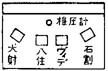
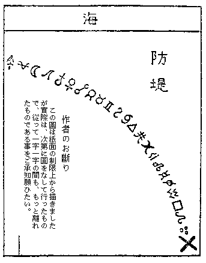

| 潜航艇「鷹の城」 | |
| 小栗 虫太郎 | |
| (2012) | |
潜航艇「鷹の城」
小栗虫太郎
第一編 海底の惨劇
一、海―武人の墓
それは、夜暁
までに幾ばくもない頃であった。
すでに雨は止み、波頭も低まって、その轟きがいくぶん衰
えたように思われたが、闇はその頃になるとひとしおの濃さを加えた。
その深さは、ものの形体
運動
のいっさいを呑
み尽してしまって、その頃には、海から押し上がってくる、平原のような霧があるのだけれど、その流れにも、さだかな色とてなく、なにものをも映そうとはしない。
ただ、その中をかい間ぐって、ときおり妙に冷
やりとした――まるで咽喉
でも痛めそうな、苦ほろい鹹気
が飛んでくるので、その方向から前方を海と感ずるのみであった。
しかし、足もとの草原は、闇の中でほう茫
と押し拡がっていて、やがては灰色をした砂丘となり、またその砂丘が、岩草の蔓
っているあたりから険しく海に切り折れていて、その岩の壁は、烈しく照りつけられるせいか褐色に錆
びついているのだ。
しかし、そういった細景が、肉の眼にてんで映ろう道理はないのであるが、またそうかといって闇を見つめていても、妙に夜という漆闇
の感じがないのである。というのは、そのおり天頂を振りあおぐと、色も形もない、透きとおった片雲
のようなものが見出されるであろう。
その光りは、夢の世界に漲っているそれに似て、色の褪せた、なんともいえぬ不思議な色合いであるが、はじめは天頂に落ちて、星を二つ三つ消したかと思うと、その輪形
は、いつか澄んだ碧
みを加えて、やがては黄道を覆い、極から極に、天球を涯
しなく拡がってゆくのだ。
いまや、岬の一角ははっきりと闇から引き裂かれ、光りが徐々に変りつつあった。
それまでは、重力のみをしんしんと感じ、境界も水平線もなかったこの世界にも、ようやく停滞が破られて、あの蒼白い薄明が、霧の流れを異様に息づかせはじめた。すると、黎明
はその頃から脈づきはじめて、地景の上を、もやもやした微風がゆるぎだすと、窪地の霧は高く上
り、さまざまな形に棚引きはじめるのだ。そして、その揺動の間に、チラホラ見え隠れして、底深い、淵のような黝
ずみが現われ出るのである。
その、巨大な竜骨のような影が、豆州の南端――印南岬
なのであった。
ところがそのおり、岬のはずれ――砂丘がまさに尽きなんとしているあたりで、ほの暗い影絵のようなものが蠢
いていた。
それは、明けきらない薄明のなかで、妖
しい夢幻のように見えた。ときとして、幾筋かの霧に隔てられると、その塊がこまごま切りさかれて、その片々が、またいちいち妖怪めいた異形
なものに見えたりして、まこと、幻のなかの幻とでもいいたげな奇怪さであった。
けれども、その不思議な単色画
は疑いもない人影であって、数えたところ十人余りの一団だった。
そして、いまや潜航艇「鷹の城
」の艇長――故テオバルト・フォン・エッセン男の追憶が、その夫人ウルリーケの口から述べられようとしている。
しかし、その情景からは、なんともいえぬ悲哀な感銘が眼を打ってくるのだった。海も丘も、極北の夏の夜を思わせるような、どんよりした蒼鉛一味に染め出されていて、その一団のみが黒くくっきりと浮び上がり、いずれも引き緊った、悲痛な顔をして押し黙っていた。
そのおり、海は湧き立ち泡立って、その人たちにあらんかぎりの威嚇
を浴
せた。荒
けあとの高い蜒
りが、岬の鼻に打衝
かると、そこの稜角で真っ二つに截
ち切られ、ヒュッと喚声をあげる。そして、高い潮煙が障壁から躍り上がって、人も巌も、その真白な飛沫
をかぶるのだった。
風も六月の末とはいえ、払暁の湿った冷たさは、実際の寒気よりも烈しく身を刺した。しかも、岬の鼻に来てはすでに微風ではなく、髪も着衣
も、なにか陸地の方に引く力でもあるかのよう、バタバタ帆のようにたなびいているのだ。
人たちは、いずれも両脚を張ってはいるが、ともすると泡立つ海、波濤の轟き、風の喊声
に気怯
じがしてきて、いつかはこの蒼暗たる海景画が、生気を啜
りとってしまうのではないかと思われた。
しかし、その一団は、はっきりと二つの異様な色彩によって区分されていた。
と云うのは、まことに物奇
しい対象であるが、夫人と娘の朝枝以外の者は、七人の墺太利人
と四人の盲人だったからである。
そのうち七人の墺太利人は、いずれも四十を越えた人たちばかりで、なかには、指先の美しい音楽家らしいのもいた。また、髭
の雄大な退職官吏風の者もいて、顳顬
のあたりに、白い房を残した老人が二つ折れになっているかと思えば、また、逞
しい骨格を張った傷病兵らしいのが、全身を曲った片肢で支えているのもあって、服装の点も区々まちまちであった。
しかし、誰しもの額や顳顬
には、痛ましい憔悴の跡が粘着
りついていて、着衣にも労苦の皺
がたたまれ、風がその一団を吹き過ぎると、唇に追放者
らしい悲痛なはためきが残るのだった。
また、盲人の一群は、七人の向う側に立ち並んでいて、そのぎごちない身体つきは、神秘と荒廃の群像のように見えた。
もはや眼以外の部分も、生理的に光をうけつけなくなったものか、弱った盲目蛆
のように肩と肩を擦
り合わせ、艶
の褪
せた白い手を互いに重ねて、絶えず力のない咳をしつづけていた。
しかし、この奇異
な一団を見れば、誰しも、一場の陰惨な劇
を、頭の中でまとめあげるのであろう。
あの黒眼鏡を一つ一つに外していったなら、あるいはその中には、天地間の孤独をあきらめきった、白い凝乳のような眼があるかもしれないが、おそらくは、眼底が窺
えるほどに膿潰
し去ったものか、もしくは蝦蟇
のような、底に一片の執念を潜めたものもあるのではないかと思われた。
が、いずれにもせよ、盲人の一団からは、故
しらぬ好奇心が唆
られてくる。そしていまにも、その悲愁な謎を解くものが訪れるのではないかと考えられた。
その四人は朝枝を加えて、やや金字塔
に近い形を作っていた。
と云うのは、中央にいる諾威
人の前砲手、ヨハン・アルムフェルト・ヴィデだけがずば抜けて高く、それから左右に、以前は一等運転士だった石割
苗太郎
と朝枝、そして両端が、現在はウルリーケの夫――さきには室戸丸
の船長だった八住
衡吉
に、以前は事務長の犬射
復六
となっているからだった。
そのヴィデは、はや四十を越えた男であるが、丈は六尺余りもあって、がっしりとした骨格を張り、顔も秀でた眼鼻立ちをしていた。亜麻色の髪は柔らかに渦巻いて、鼻は鷹の嘴
のように美しいが、絶えず顔を伏目に横へ捻じ向けていた。その沈鬱な態度は、盲人としての理性というよりも、むしろ底知れない、こころもち暗さをおびた品位であろう。
ところが、ヴィデの頸
から上には、生理的に消しがたい醜さが泛
んでいた。頰には、刀傷や、異様な赤い筋などで、皺が無数にたたまれているばかりでなく、兎唇
、瘰癧
、その他いろいろ下等な潰瘍
の跡が、頸
から上をめまぐるしく埋めているのだった。
それらは、疾病
放縦などの覆い尽せない痕跡なのであろうが、一方彼が常に、砲手として船に乗るまでは数学者だった――などというところをみると、そのかずかずの醜さは、とうてい彼の品位が受け入れるものとは思われなかった。
むしろ、その奇異
な対象から判断して、事実はその下に、美しい人知れない創
があって、それを覆うている瘤
というのが、あの忌わしい痕のように考えられもするので、もしそうだとすると、ヴィデには二つの影があらねばならなくなるのだった。
それから、犬射復六は小肥りに肥った小男で、年配はほぼヴィデと同じくらいであるが、一方彼は詩才に長
け、広く海洋の詩人として知られている。
柔和な双顎
の上は、何から何まで円みをおびていて、皮膚はテカテカ蠟色に光沢
ばんでいる。また唇にはいつも微かな笑いが湛えられていて、全身になんともいえぬ高雅な感情が燃えているのだった。
それに反して石割苗太郎は、神経的な、まるで狐みたいな顔を持っていた。
彼は即座に感情を露
わして、その皮膚の下に、筋肉の反応がありありと見えるくらいであるが、その様子はむしろ狂的で悲劇的で、絶えず彼は、自分の頓死を気づかっているのではないかと思われた。
しかし、最後の八住衡吉となると、誰しもこれが、ウルリーケの夫であるかと疑うに相違ない。
それは、世にも痛ましく、浅ましいかぎりであったからだ。衡吉ははや六十を越えて、その小さな身体と大きな耳、まるい鼻には、どこか脱俗的なところもあり、だいたいが人の良い堂守と思えば間違いはない。
ところが、その髪を仔細に見ると、それも髭も玉蟲色に透いて見えて、どうやら染められているのに気がつくだろう。そうして、愚かしくも年を隠そうとしていることは、一方に二十いくつか違う、妻のウルリーケを見れば頷
かれるが、事実にも衡吉は、不覚なことに老いを忘れ、あの厭わしい情念の囚虜
となっているのだった。
その深い皺、褪せた歯齦
を見ると、それに命を取る病気の兆候を見出したような気がして、年老いて情慾の衰えないことが、いかに醜悪なものであるか――如実に示されていた。
そのせいか、大きな花環を抱いているそのすがたにも、どこか一風変った、感激とでも云いたいものがあって、おそらく思慮や才智も、充分具えているに違いないが、同時にまた、痴呆めいた狂的なものも閃
いているのだった。
そうして、以前はその四人が、同じ室戸丸の高級船員だったことが明らかになれば、ぜひにも読者諸君は、それと失明との関係に、大きな鎖の輪を一つ結びつけてしまうに相違ない。
そのおりウルリーケは、静かに列の間を、岬の鼻に向って歩んでいった。
ウルリーケが立ち止まって、波頭の彼方を見やったとき、その顔には、影のような微笑が横切った。それはごく薄い、やっと見えるか見えないぐらいの、薄衣
のようなものだったが、しばし悲しい烙
印の跡を、覆うているかのように見えた。
ウルリーケは、見たところ三十がらみであるが、実際は四十に近かった。
のみならず、その典型的な北欧型
といい、どうみても彼女は、氷の稜片で作り上げられたような女だった。生え際が抜け上がって眉弓が高く、その下の落ちくぼんだ底には、蒼
い澄んだ泉のような瞳があった。
両端が鋭く切れすぎた唇は、隙間なくきりりと締っていて、やや顎骨が尖っているところといい、全体としては、なにかしら冷たい――それが酷
いほどの理性であるような印象をうけるけれども、また一面には、氷河のような清冽な美しさもあって、なにか心の中に、人知れぬ熾烈
な、狂的な情熱でも秘めているような気もして、おりよくその願望が発現するときには、たちまちその氷の肉体からは、五彩の陽炎
が放たれ、その刹那、清高な詩の雰囲気がふりまかれそうな観も否めないのだった。
しかし、ウルリーケのすらっとした喪服姿が、おりからの潮風に煽られて、髪も裾も、たてがみのように靡
いているところは、どうして、戦女
とでも云いたげな雄々
しさであった。
空は水平線の上に、幾筋かの土堤
のような雲を並べ、そのあたりに、色が戯れるかのごとく変化していった。彼女はしばらく黙禱を凝
らしていたが、やがて、波間に沈んだ声を投げた。
その言葉はかずかずの謎を包んで神秘の影を投げ、しばらくはこの岬が、白い大きな妖しげな眼の凝視の下にあるかのようであった。
「いつかの日、私はテオバルト・フォン・エッセンという一人の男を知っておりました。その男は、墺太利
海軍の守護神、マリア・テレジヤ騎士団の精華と謳
われたのですが、また海そのものでもあったのですわ。
ああ貴方！ あの日に、貴方という竪琴の絃
が切れてからというものは......それからというもの......私は破壊され荒され尽して、ただ残滓
と涙ばっかりになった空虚
な身体を、いま何処で過ごしているとお思いになりまして。
私は、貴方との永くもなかった生活を、この上もない栄誉
と信じておりますの。だって貴方は、怖
れを知らぬ武人――その方にこよなく愛されて、それに貴方は、墺太利全国民の偶像だったのですものね。
ところが、あの日になって、貴方は急に海から招かれてしまったのです。
というのも、貴方が絶えずお慨
きになっていたように、なるほど軍司令部の消極政策も、おそらく原因の一つだったにはちがいないでしょうが、もともといえば、貴方お一人のため――その一人の潜航艇戦術が伊太利
海軍に手も足も出させなかったからです。
ねえ、そうでございましたでしょう。あれまでは、トリエステの湾はおろか、アドリヤチックの海の何処にだっても、砲弾
の殻一つ落ちなかったのではございませんか。その安逸が――いいえ蟄居
とでも申しましょうか。それが、貴方に海の憬れを駆り立て、硝烟
の誘いに耐えきれなくさせて、秘かにＵＲ
―４号の改装を始めたのでしたわね」
一九一五年五月、参戦と同時に、伊太利は海上封鎖を宣言した。
もともと、両者の海軍力は、戦艦九対十四、装甲巡洋艦九対二の比率で、伊太利側が一倍半の優勢を持していたのである。そこへ、英仏地中海艦隊の援助によって、墺太利
沿岸封鎖が行われたのである。
ポーラ鎮守府をはじめに、トリエスト、セベニコ、カッタロ、テオド、ザラ等の各軍港が、ほとんど抵抗もうけず、完全に封鎖されてしまった。そうして、海上貿易の遮断をうけるとともに、墺太利は、各艦隊の連絡策戦が不可能になってしまったのである。
当時、伊太利側の策戦としては、まず、トリエスト、フューメのような無防禦港を破壊する。そうして精神的打撃を与えしかるのちに、海軍要塞を占拠して陸兵を上陸せしめようとしたのであった。それがために、敵艦隊の集中するカッタロ湾に主力を向け、まさにアルバニアのヴァロナを出港せんばかりの気配にあった。
しかし、墺太利
側としてもなんとかして、ヴェネチア、ラヴェンナ、アンコナ、タラント等に、勢力を置いている敵の封鎖を打ち破らねばならなかった。そうして、もし巧みに封鎖を脱することができれば、ヴェネチア、アンコナの両港を襲撃できるばかりではなく、ブリンデッシ、バリーなど無防禦港も、砲火の危険に曝
されねばならない。さらに、一段進捗
して、オトラント海峡の封鎖をみれば、もはや伊太利
艦隊は完全な苦戦である。
この二つの策戦は、当時万目の見るところだったのである。そうしていつかは、アドリアチック海の奥に、砲声を聴くであろう。トリエスト、ヴェネチアを結ぶ線上に砲火が散り、そこが両軍の死線となるであろう。と、戦機のせまる異常な圧迫感が、日々に刻々とたかまっていったのである。
しかし、墺海軍は依然として、退嬰
そのもののごとく自港の奥に潜んでいた。三隻単位を捨てて、五隻単位主義を採択したほどの墺海軍が、また何故に、損害の軽微な潜航艇戦にも出なかったのであろうか。それには、陸上トレンチノ線の、快勝が原因だったのである。
伊太利陸軍は、参戦以来、主力をイゾンゾに注いで、大規模な攻撃を開始した。しかし、費やした肉弾と、砲弾の量にもかかわらず、わずかイゾンゾ河の下流で国境を越えたにすぎなかった。そこへ、対セルビアの戦闘が終結したのである。
墺軍は、俄然そこで攻勢に転じた。まず、イゾンゾ方面に、兵力集結の偽装をおこない、そうして、伊軍の注意を、その方面に牽
きつけておいて、その間
に、こっそり攻勢の準備を整えていた。
露墺戦線よりの三個師団、イゾンゾ方面より四個師団、バルカン方面より三個師団、さらに、国内で編成した混成三個旅団を、それまでのケーブエス、ダンクル軍に合わせたのである。そして、オイゲン大公指揮の下に、伊軍陣地を突破して、ヴェネチア平原に進入しようと企てたのであった。
四月二日払暁、ロヴェレット南方より、スガナ渓谷
にいたる、トレンチノ全線の砲兵が、約二千門といわれる砲列の火蓋を切った......。それが伊墺戦線最大の殺戮
なのであった。モリ南方高地からかけて、ズグナ・トルタ山、マッギオ山、カムポ山、アルメンテラ山を経て、コロー山にわたる伊軍第一陣地は、夕刻までに大半破壊されてしまった。
その頃には、南方チロール地区隊、ギヴディカリー部隊を先頭に、歩兵が行動を開始した。ケーブエス軍は、一部をアディジェ河谷に、主力をアスチコ河谷に向けて、アルシェロ市を目標とした。また、ダンクル軍は、一部をスガナ河谷に、主力をチエッテ・コムニ高原に向け、これはアジアゴ市を目標とした。
そして、猛烈な火砲戦に、算を乱し、潰走する伊軍を追うて、まもなく、その両市を占領することができた。
が、墺太利
海軍にとると、この大勝禍いなるかなであった。おそらく、両国の勝敗が、陸戦で決せられるものと見込んだのであろう、いつのまにやら、燃えていた必戦の意気が消えてしまった。しかしその後は、戦線にも格別の変化がなく、ただ伊軍は、じりじりと墺軍を押し戻していった。
それが、決戦派の首領、男爵フォン・エッセンには耐
らなかったのである。彼は、機さえあれば怒号して、軍主脳部に潜航艇戦をせまったのであった。
――わが国は、かつて統一戦争の当時、伊太利
軍を破ったことがあった。その後も、一八六六年にはクリストッツァの戦いで勝ち、海軍もまた、リッサ島の海戦と伊太利艦隊を破った！ しかも、今次の大戦においても、どうであろうか。じつに、わが国は伊太利軍には一度も敗れたことはないのである。その歴史的信念を忘れ、決戦に怯気
だった、軍主脳部こそは千叱
の鞭
をうけねばならぬ。
この、マリア・テレジヤ騎士団の集会でおこなった演説を最後に、フォン・エッセンは二度と怒号しようとはしなかった。そして、秘かに、ＵＲ
―４号の改装をはじめたのである。
こうした経緯
が、言葉を待つまでもなく、七人の復辟
派には次々と泛
んでいった。まるで、ウルリーケの一言が礫
のように、追憶の、巻き拡がる波紋のようなものがあったのである。
「そうして、ＵＲ
―４号の改装が終りますと、次に私を待っていたのが、悲しい船出でございました。私はあの前夜に慌
しい別れを聴かせられたとき、その時は別離の悲しみよりか、かえって、あの美しい幻に魅せられてしまいましたわ。
あの蒼い広々とした自由の海、その上で結ぶ武人の浪漫主義
の夢――。まあ貴方は、艇
を三檣
の快走艇
にお仕立てになって......、しかもそれには、『鷹の城
』という古風な名前をおつけになったではございませんか。
ああそれは、王立
カリンティアン快走艇
俱楽部
員としての、面目だったのでしょうか。いいえいいえ、私はけっしてそうとは信じません。
きっと貴方は、最後の悲劇を詩の光輪で飾りたかったに違いありませんわ。そして、しめやかな通夜を他目
に見て――俺は、生活と夢を一致させるために死んだのだ――とおっしゃりたかったに相違ありませんわ。
そうして、その翌朝一九一六年四月十一日に、その日新しく生れ変った潜航艇『鷹の城
』は、朝まだきの闇を潜
り、トリエステをとうとう脱け出してしまったのでした。あの時すぐに始まった朝やけが、ちょうどこのようでございましたわねえ」
その時、水平線がみるみる脹
れ上がって、美
しい暁
の息吹が始まった。波は金色
のうねりを立てて散光を彼女の顔に反射した。
ウルリーケは爽やかな大気を大きく吸い込んだが、おそらく彼女の眼には、その燦
かな光が錫色をした墓のように映じたことであろう。
「ところが、そのとき積み込んだ四つの魚雷からは、どうしたことか、功績
の証
が消え去ってしまったのです。
その月の十九日タラント軍港を襲撃しての、『レオナルド・ダ・ヴィンチ』号の撃沈も、年を越えた五月二十六日コマンドルスキイ沖の合衆国巡洋艦『提督
デイウェイ』との戦闘も、このとおり艇内日誌にはちゃんと記されておりますが、その公表には、どうしたことか時日も違い、各自自爆のように記されてあるのです。
それがドナウ聯邦派の利用するところとなって、ハプスブルグ家の光栄
を、貴方一人の影で覆い、卑怯者、逃亡者、反逆者と、ありとあらゆる汚名を着せられて、今度は共和国を守る、心にもない楯に変えられてしまったのです。
それにつれて、同じ運命が私にも巡ってまいりました。
わけても、貴方の生存説が、どこからともなく伝わってまいりましたおりのこととて、私たちの家には毎夜のように石が投げられ、むろん貴方のお墓などは、夢にも及ばなくなったのです。
ところへ、貴方が拿捕
された『室戸丸』の船長から――それが現在私の夫ではございますが、貴方の遺品
を贈るという旨を申しでてまいりました。それがそもそも、いまの生活に入る原因となったのでしたけど、私の悲運は、いまなお十七年後の今日になっても尽きようとはいたしません。
せっかく貴方の墓と思い、引き揚げた『鷹の城
』も、ついには私たちの生計の糧
として用いねばならなくなりました。
私たちはこの上、安逸な生活を続けることが不可能になったのでございます。それで八住は、船底を改装して硝子
張にしたのを、いよいよ海底の遊覧船に仕立てることにいたしました。
そうして再び、貴方のお船『鷹の城
』は動くことになりましたけど、私にとれば、貴方のお墓を作る機会が、これで永遠に失われてしまったことになります。
ですけど、貴方の幻だけはかたく胸に抱きしめて――あの気高くも運命
はかなき海賊
、いいえ、男爵海軍少佐テオバルト・フォン・エッセンは、死にさえも打ち捷
って、このような熱い接吻で私の唇を燃やすではございませんか。
貴方、そんな頸
の上などは擽
っとうございますわ。ねえ、耳朶
へ......貴方......」
フォン・エッセン艇長とウルリーケとを結びつけた、かくもかたい愛着の絆を前にしては、現在の夫、八住衡吉などは、むろん影すらもないのだった。
ウルリーケはこもごも湧き起る回想のために、しばらくむせび泣きしていたが、やがて歩を返し、つづいて艇長の最期を語るために、詩人の犬射復六が朝枝に連れ出された。
ところが、この前事務長の口からして、艇長の最期にまつわる驚くべき事実が吐かれたのであった。
二、「鷹の城
」の怪奇
「私はこの際、フォン・エッセン艇長の最期を明らかにして、坊間流布されておりますところの、謬説を打破したいと考えます。
私ども四人が当時乗り込んでおりました貨物船室戸丸は、そのおり露西亜
政府の傭船となっておりましたので、『鷹の城
』の襲撃をこうむることは、むしろ当然の仕儀であると云い得ましょう。一九一七年三月三十日、室戸丸は『鷹の城』のために、晩香波
島を去る七〇浬
の海上で拿捕
されました」
こうして、犬射が語りだす遭難の情景を、作者は、便宜上船内日誌を借りることにする。
本船は横浜解纜
の際、以前捕鯨船の砲手であったヴィデを招き、同時に四吋
の砲を二門積み込んだのであった。それは、左右両舷に据えられた。しかも数箱の砲弾が甲板に積み上げられたのである。だが、どうしてだろう？ 北太平洋には、いま氷山のほか何ものも怖
れるものはないではないか。
じつに本船は、フォークランド沖の海戦で、撃ち洩らされた独艇を怖れたからである。独逸
スペイン艦隊の旗艦シャルンホルスト号には、二隻の艦載潜航艇があったのであるが、そのうち一つは傷つき、他の一隻は行衛
知れずになってしまった。
それ以来、濃霧
のような海魔のようなものが、北太平洋の北圏航路を覆い包んでしまったのである。
ある船は、海面に潜望鏡
を見たといい、また、覗いてすぐに姿を消したという船もあった。しかし本船は、この一夜で航程を終ろうとしていた。それが、西経一三三度二分、北緯五十二度六分、女王
シャーロット島
を遠望する海上であった。
日が暮れると、同時に重い防水布を張り、電球は取り除かれて、通風口は内部
から厚い紙で蓋をしてしまった。操舵室も海図室も同じように暗く、内部も外部
も、闇夜のような船であった。
「ですが、奴らは、なかなかうまくやりますからね」
六回も、独艇の追跡をうけたという手練のヴィデは、碧い眼をパチパチと瞬
いていった。
「僕は、本船のまえは仏蘭西
船にいたんですが、あれに、こういう大砲
の一、二門もあったらなア。なにしろね、船に魚雷を喰わせやがって、悠々と現われてくるんです。おまけに、奴ら、桟敷にいるような気持で、見物しているじゃありませんか。
ところが船は、右舷をしたに急速に傾斜してゆく。それから、全員が去っても、まだ私たちは船橋に止
まっておりました。すると、そこへ近づいてきて、立ち去らなきゃ、殺すぞと嚇
かすんです。いや間もなく、私だけは漁船に救けられましたがね」
それからヴィデは、通風筒の蔭で莨
に火を点
けたが、なんと思ったか、遭難事の注意をこまごま聴かせはじめたのである。
「ところで、いざという時には、電光形
の進路をとるんです。絶えず羅針盤
で、四十五度の旋回をやる。そうすると、よしんば潜航艇が船影を認めたにしろ、魚雷を発射することが、非常に困難になってくるんです。
ねえ、そうでしょう。最初目的の船の、進路と速度を正確に計算しなけりゃならぬ。それから、いよいよ発射する位置にむかって、潜行をはじめるのです。
ところがねえ、さてという土壇場になってまた潜望鏡
をだすと、なにしろ、船のほうは電光形
の進路をとっている。そこで、計算をはじめから、やり直さなけりゃならなくなるんです。
それから端艇
は、上甲板の手縁
とおなじ線におろしておいてください。いや、すぐ降ろせるように。それから、水樽とビスケットを......」
「だが、本船の危険は、もう去ったも同じじゃないか」
八住船長は、ヴィデが警戒をはじめたのを、不審に思ったらしい。
「とにかく、夜明けまでには、晩香波
へ着く。それに、本船には大砲があるのだ。ヴィデ君、君も、砲術にかけては、撰
り抜きの名手じゃないか。ハハハハ、出たらグワンと一つ、御見舞申してもらいたいもんだな。なアに、君の腕なら、潜航艇も抹香鯨
も同じことさね」
「いやかえって、明日入港というような晩が危険なんです。船長、甲板で葉巻は止めていただきましょう」
と、銜
えていた葉巻を、グイと引き抜いたとき、かたわらにいた、無電技師がアッと叫び声を立てた。
「おいヴィデ君、ありゃなんだ？」
そうして一同は、高鳴る胸を押えて、凝視することしばしであった。
飛沫
のなかを、消えあるいは点いて......闇の海上をゆく微茫
たる光があった。その頃は、小雨が太まってき長濤
がたかく、舳
は水に没して、両舷をしぶきが洗ってゆく。そうして、ヴィデは部署につき、無電技師は、電鍵
をけたたましく打ちはじめたのである。
「危険に瀕す。現在の位置において、救助を求む」
その返電に、晩香波
碇泊艦隊から、急派の旨を答えてきたが、しかし、時はすでに遅かった。
ヴィデも、長濤
に阻まれて、照尺を決めることが出来ない。なにしろ、相手は一点の灯、こちらは、闇にうっすらと浮く巨館のような船体である。それが、悔んでも及ばぬところの室戸丸の不幸であった。
煙筒は、真黒な煤煙
に混じえて、火焰を吐き出しはじめた。船体が、ビリビリ震動して、闇に迫る怪艇の眼から遁
れようとした。
高速力で、旋廻を試みながら、絶えず、花火のような火箭
を打ち上げていた。しかし、波間の灯は、室戸丸から執拗に離れなかったのである。やがて、警砲が放たれ、右舷に近く水煙があがった。
「だめです、船長。なまじ踠
いたら、僕らは復讐されますぜ。発砲はやめます。敵艇の砲手の腕前は、驚くべきものですよ。断じて、盲目弾
ではない。最初の警砲は、本船の右舷近くに落ちたでしょう。それから、旋廻したにもかかわらず、二の弾は、船首の突梁
に命中したのです。船長、本船は翻弄されているんです」
そう云って、ヴィデの蒼白な顔が、砲栓
から離れようとしたとき、三の弾が、今度は船尾旗桿に囂然
と命中した。
「よろしい、抵抗を中止して、君の意見に従おう」
と同時に、機関
の音がやみ、石割一等運転手が舵機室から出てきた。彼はそれまで、あわよくば衝角を狙おうと、操舵していたのであったが、船長の決意は、全員の安危に白旗の信号を送ったのであった。
ところが、その瞬間、四の弾が舷側を貫いて、機関室に命中した。そうして、進行を停止した船に、艇から、次の信号が送られたのであった。
「幹部船員四名、書類を持って艇に来たれ」
かくて、八住船長以下、犬射事務長、ヴィデ砲手、石割一等運転手の四人が、全員に別れを告げ、船を離れ去ることになったのである。
その直後に、全員が短艇
で、四散するさまも、また哀れであった。が、まもなく、室戸丸に最後の瞬間が訪れた......
燃料や食料を、積み得るだけ艇に移したうえ、室戸丸は、五発の砲弾を喰いそのまま藻屑
と消えてしまったのである。
室戸丸は、みるみる悲惨な傾斜をなしてゆき、半ば以上も海面に緑色
の船腹が現われてきた。やがて、鈍い、遠雷のような響きがしたかと思うと、いきなり船首から真っ縦に水に突き刺った。そして、たかい、長濤
のような波紋が、艇をおどろしく揺
りはじめたのである。
しかし、艇内に収容されて、最初の駭
きというのは、この船が独艇ではなく、墺太利
の潜航艇だということであった。
「驚いた。だが光栄至極にも、われわれはフォン・エッセンの指揮下にある、潜航艇に乗り込んでしまった。あの人は、墺太利
の、いや欧羅巴
きっての名将なんだ。鬼神、海神といわれる――いつかウインに、記念像
を持つのは、この人以外にはないというからね」
ヴィデがすぐ、こんなことを、一同の耳に囁
きはじめた。乗組員は二十名、艇
は、一九〇六年の刻印どおり旧型の沿岸艇だ。
巡航潜水艇ではない。それにもかかわらず、七つの海を荒れまわる胆力には驚嘆のほかないのである。
しかも、艇内の四人は、厚遇の限りを尽されていた。どこでも、自由に散歩ができるし、おりには、艦長とも戯
れ口を投げ合う。
そして艇は、女王
シャーロット島
を後に、北航をはじめたのであったが、まもなく艇首をカムチャツカに向けた。
その間も、十三節
か十四節で、たいてい海面を進んで行った。事実水中に潜ったことは、数えるほどしかなかった。一度はかれこれ、五十尋
近くも下ったことがあったが、その時は、駆逐艦に援護された、日本の商船隊を認めたときであった。
「艇長、貴方は、あの駆逐艦が怖いのですか」
事務長の犬射は、ときおり独詩を書いて示すので、艇長とは打ち解け合った仲であった。
「いや、怖くもないがね。君も知ってのとおり、本艇には、あますところ魚雷が一本だけだ。で、なるべくは大物というわけでね」
そう云って艇長は、蓄音器の把手
をまわし、「碧
きドナウ」をかけた。三鞭酒
を抜く、機関室からは、兵員の合唱が洩れてくる。
が、こうして語るその情景を、眼に、思い泛
べてもらいたい。霧立ち罩
めた夜、波たかく騒ぐ海、駆逐艦からは爆雷が投ぜられて、艇中の鋲
がふるえる。
しかも、そのまっ暗な、水面下三百呎
のしたでは、シュトラウスのワルツが響き、三鞭酒
の栓がふっ飛んでいるのである。四人は、嚙
みかけた維納腸詰
を嚥
み下すこともできず、しばらくは、奇異
な、浪漫的
な、悪夢のなかを彷徨
っていた。
以上の経過を、犬射は言葉すくなに語りおえたのであるが、すると、見えぬ眼を海上にぴたりと据え、そこを墓とする、武人の俤
を偲
んでいるようであった。
が、やがてその口は、怪奇に絶する、「鷹の城
」の遭難にふれていた。
「そんなわけで、われわれが過した艇内の生活は、意外にも好運だったと云い得ましょう。そしてその翌日、合衆国巡洋艦『提督
デイウェイ』とコマンドルスキイ沖で遭遇するまでは、航路、まったくの無風帯でした。ところがその時、生れてはじめて海戦というものを目撃した――そのわれわれに、誰が、一週間後になって非運が訪れようと信じられたでしょうか。
それは、忘れもしない六月二日の朝、濃霧
の霽
れ間に、日本国駆逐艦の艦影を望見したので、ともかく、衝角だけは免れようと、急速な潜水をはじめたのです。
ところが、そうして潜
って二、三十米
のあたりに、どうしたことか、ふいに艇体に激烈な衝撃
をうけました。それなり艇体を、四十五度も傾けたまま動けなくなってしまったのです。そのはずみに、機関室からは有毒のクローリン瓦斯
が発生して、艇長を除く以外の乗組員は、ことごとくその場で斃
れてしまいました。
そうして五人の生存者には、その時から悲惨な海底牢獄の生活が始まって、刻々と、死に向い暗黒にむかって歩みはじめたのです。
しかし、万が一の希望を繫いでいたとはいえ、あの夢魔のように襲いかかってくる自殺したい衝動と、どんなに......闘うのが困難だったことか。ところが、その日の夜半、突然艇長の急死が吾々
を驚かしたのです。
艇長は士官室の寝台の上で、左手をダラリと垂れたまま、脈も失せ氷のように冷たくなって横たわっておりました。それは、明白な自然の死でした。誓ってそうであったことだけは、かたく断言いたします。
なぜでしょうか......それにはまず、吾々は艇長に対し寸毫
の敵意さえもなかったことが云われます。それに吾々は、万が一の幸運の際のことも考えねばなりません。そうなった時、なんで艇長の指図なくして吾々の手が、迷路のような装置を操り脱出できましょうや。
ところが、続いて驚くべきことが起ったのです
。それはその後
、四時間ほど経つか経たぬかの間にあろうことか
、艇長の死体が烟のように消え失せてしまったのです
。
もちろん蘇生して閉鎖扉を開けて機関室に入ったとすれば、吾々もともどもクローリン瓦斯
で斃
れねばなりませんし......たとえ発射管から脱出するにしても、肝心の圧搾空気で操作するものが吾々無能の、四人をさておいて外に誰がありましょう。
また、夜中の脱出は凍死の危険があり、すこぶる無謀であるのは自明の理であるし、現にその救命具も引揚げ後調べると、数が員数どおり揃っていたのです。
ですから私たちは、ただただ怖ろしい現実に啞然となって、ことにああしたおりでも何かしら、悪夢のような不思議な力に握り竦
められている気がいたしてなりませんでした。
ああ艇長の死体を艇から引き出したのは、かねて伝説に聴く海魔
の仕業
でしょうか、それともまた、文字どおりの奇蹟だったのでしょうか。
いずれにしても、艇長の死と死体の消失が厳然たる事実であることは、その後に艇を引き揚げた、日本海軍の記録的に明記するところなのです」
風はなぎ、暁は去って、朝靄
も切れはじめた。犬射は、感慨ぶかげな口調を、明けきった海に投げつづける。
「艇内は、その前後に蓄電の量が尽きてしまい、吾々が何より心理的に懼
れていた、あの怖
ろしい暗黒が始まったのです。すると、それから二時間ばかりたつとがたりと艇体が揺れ、それなり何処へやら、動いて行くような気配が感ぜられました。
そうしてわれわれは奇蹟的にも救われたのですが......もともと沈没の原因は、艇の舳を蟹網に突き入れたからで、もちろん引揚げと同時に、水面へ浮び出たことは云うまでもないのであります。
ところが、その暗黒のさなかに、四人がとんでもない過失をおかしてしまったのです。
と云うのは、寒さに耐えられず嚥
んだ酒精
というのが木精
まじりだったのですから、せっかく引き揚げられたにもかかわらずあの暗黒を最後に、吾々は光の恵みから永遠に遠ざけられてしまったのでした。
あの燃え上がるような歓喜は、艙蓋
が開かれると同時に、跡方もなく砕け散ってしまいました。もともと自分から招いた過失であるとはいえ、私たちは第二の人生を、光の褪せた晦冥
の中から踏み出さねばならなくなったのです。
こうして『鷹の城
』は泛
び、同時に、吾々に関する部分だけは終りを告げるのですが、一方『鷹の城』自身は、それからもなおも数奇を極めた変転を繰り返してゆきました。と云うのは、引揚げ後内火艇に繫がれて航行の途中、今度は宗谷海峡で、引網の切断が因
から沈没してしまったのです。
そして、三度
水面に浮んだのは御承知のとおり、夫人の懇請で試みた、船長八住の引揚げ作業でした。
しかし、上述した二回の椿事によって『鷹の城』の悪運が、すでに尽きたことは疑うべくもありません。
ただ願わくば、過ぎし悪夢の回想が、のちの怖れを拭い、船長の新しい事業に幸あらんことを。そうして、故フォン・エッセン男爵の霊の上に、安らかな眠りあらんことを......」
三、濃緑の海底へ
艇長フォン・エッセン男の死体が消失した、しかも蒼海
の底で、密閉した装甲の中で――この千古の疑惑は、再び新しい魅力を具えて一同のうえにひろがった。
朝風の和やかな気動が、復六の縮毛
をなぶるように揺すっていたが、彼は思案げに手を揉
み合せるのみで、再びあの微笑が頰に泛
んではこなかった。
そうして、犬射復六が座に戻ると、今度は一人の老人が、道者杖
をついて向うの列から抜け出てきた。
その老人は、もちろん追放された復辟
派の一人で、長い立派な髯に、黄色い大きな禿頭をした男だったが、その口からは、艇長死体の消失をさらに紛糾させ、百花千瓣
の謎と化してしまうような事実が吐かれていった。
「儂
は、王立
カリンティアン快走艇
俱楽部
員の一人として、かつてフォン・エッセン男爵に面接の栄を得たものでありますが、儂ですらも、これまではさまざまな浮説に惑わされ、艇長の死を容易に信ずることができなかったのでした。
それが、今や雲散霧消したことは、なにより墺太利
海軍建設以来最初の英雄であるところの、フォン・エッセン閣下のため祝福さるべきであろうと信じます。
けれども、『鷹の城
』そのものは、きわめて初期の沿岸艇でありまして、おそらく艇長のような、鬼神に等しい魔力を具えた人物でない限りは、それによって、大洋を横行するなどは絶対不可能に違いないのです。だが儂は、あのおり『鷹の城』の脱出を耳にしたとき、ふと暗い迷信的な考えに圧せられました。
と云うのは、元来あの艇は、ゲルマニア型として墺太利帝国最初の潜航艇だったのですが、その中膨れのした船体を御覧になって、これはキムブルガーの唇（ハプスブルグ家代々の唇の特徴）じゃ――と陛下
が愛
でられたほどに由緒あるもの――それが沿岸警備にもつかず、塗料の剝げた船体を軍港の片隅に曝
らしていたのは何が故でしょうか。
それは、シュテッヘ大尉の消失――そのトリエステ軍港の神秘が、そもそもの原因だったのです。
一九一四年開戦瞬前に起って、さしも剛毅
な海兵どもを慄
え上がらせたというその不思議な出来事は、いま耳にした艇長屍体の消失と、生死こそ異なれ、まったく軌道を一つにしているではありませんか。
夫人は御承知でしょうが、シュテッヘ大尉は、フォン・エッセン閣下の莫逆
の友でありまして、同じ快走艇
俱楽部でも、シーワナカの支部に属しておりました。
ところが、決闘の結果同僚の一人を傷つけて、査問されようとするところを、艇長がＵＲ―４号の奥深くに匿
したのです。
ところが、ヴェネチア湾を潜航中不思議な事に、シュテッヘ大尉は忽然と消え失せてしまいました。
その際は、傷ついた足首を一面に繃帯して、跛
を引いていたそうですが、それもやはり、士官室の寝台から不意に姿が消えてしまったのです。それ以後ＵＲ―４号には、妙に妄想じみた空気が濃くなってきて、まさに不祥事続出という惨状だったのでした。
そうすると、やれシュテッヘ大尉の姿を、目撃した――などという者も出てくる始末。しまいには全員が、転乗願いに連署するという事態にまでなったのですから、もはや当局としても捨ててはおけず、ついにＵＲ―４号を鑑籍から除いてしまったのでした。
ＵＲ―４号の悪霊
――そのように、おぞましい迷信的な力はとうてい考えられないにしても、その二つの事件は、偶然にはけっして符合するものでないと考えております。
儂
はそれを、いかにも明白な、絶対的な事実として感じているのです。
そして
、もしやしたら
、シュテッヘ大尉が
、そのときもまだ不思議な生存を続けていて
、友に最後の友情をはなむけたのではないか
。つまり
、艇長の遺骸を
、海の武人らしく
、母なる海底に送ったのではないか
――というような、妄想めいた観念がおりふし泛
び上がってきて、儂を夢の間にも揺すり苦しめるのでした」
老人はそこで言葉をきり、吐息を悩ましげに洩らした。しかし、そのシュテッヘ大尉事件の怖ろしさは、艇長消失の可能性をも裏づけて、妙に血が凍り肉の硬ばるような空気をつくってしまった。
続いて老人は、現在維納
において艇長生存説を猛烈に煽り立てているところの、不可思議な囚人のことを口にした。
「しかし、一方共和国は、ハプスブルグ家の英雄を巧みに利用して、今や復辟運動は、それがためにまったく望みないものと化してしまったのです。
と云うのは、かつて国民讃仰の的だったフォン・エッセン男を、忌むべき逃亡者としたばかりではなく、かたわら一つの人形を作って、それとなく艇長の生存説を流布しはじめたのでした。
それが今日、維納
の噂に高い鉄仮面で、フォールスタッフの道化面を冠った一人の男が、郊外ヘルマンスコーゲル丘のハプスブルグ望楼に幽閉されていると云うのです。
そうなって、重大な国家的犯罪者らしいものと云えば、まず艇長をさておき外にはないのですから、その陋策がまんまと図星を射抜きました。そして、情けないことに墺太利
国民は、付和雷同の心理をうかうかと摑み上げられてしまったのです。
で、聴くところによると、その男の幽閉は一九一八年から始まっていて、最初はグラーツの市街を、身体中に薔薇と蔦
とを纏
い、まるで痴呆か乞食としか思われぬ、異様な風体で徘徊
していたというそうなのです。
しかし、すでに海底深く埋もれているはずの艇長が、どうして、故国に姿を現わし得ましょうや。
まさに左様、艇長フォン・エッセン男爵の墓は、東経一六〇度二分北緯五十二度六分――そこに、いまも眠りつづけているのです。
そうして、ハプスブルグ家の王系は、彼の死とともに絶えたのですが、それを再び、栄光のうちに蘇
らせようとしても何事もなし得ず、今や戦史と系譜の覇者は、二つながらに埋もれゆこうとしているのです」
老人の悲痛な言葉が最後で追憶が終り、夫人は海に花環を投げた。
そして、一同は打ち連れ立って、岬を陸の方に歩みはじめたのであるが、艇長フォン・エッセンの死に対する疑惑は、いまやまったく錯綜たるものに化してしまった。
一同は、奇怪な恐怖に駆られて、夢の中をさ迷い歩くような惑乱を感じていたのである。わけても、その得体の知れない蠢動
のようなものは、四人の盲人に、はっきりと認められた。
その四人は、一人として口を開くものがなく、互いに取り合った手が微かに顫
え、なにか感動の極限に達しているのではないかと思われた。彼らは明らかに、これから乗り込もうとする「鷹の城
」に恐怖を感じているのだ。
ところが、当の「鷹の城」は、その時岩壁を縫い、岬の尻の入江の中で、静かに揺れていた。
それは水上噸
数約四百噸ばかりの沿岸艇で、橙
色に染め変えられた美しい船体は、なにか彩色でもした烏賊
の甲のように見えたが、潜望鏡と司令塔以外のものはいっさい取り払われて、船首に近い三吋
大仰角速射砲の跡には、小さな艙蓋
が一つ作られていた。
しかし、そこは断崖の下で、そこへ行くには、岩を切り割った、二つの路を迂廻して行かねばならないのだが、朝枝と外人たちはそこで別れて、いよいよウルリーケと四人の盲人が「鷹の城」に乗り込むことになった。
海底遊覧船「鷹の城
」――。しかも、前途にあたって隠密の手があるのも知らず、ふたたび彼らは、回想を新たにしようと濃緑の海底深くに沈んで行くのだった。
司令塔の艙蓋
から鉄梯子を下りると、そこには、クルップ式の潜望鏡と潜水操舵器があって、右手が機関室、左手は二つの区画に分れていて、手前のは、以前士官室だった底を硝子
張りにした観覧室、またその奥は前
の発射管室で、そこに艇長の遺品が並べられてあった。
しかし前方の観覧室には、とうていこの世ならぬ異様な光が漲
っていた。
それは、蒼味を帯びた透明な深さであるが、水面に蜒
りが立つと、たぶんさまざまな屈折が影響するのであろうか、その光明には奇異
な変化が起ってゆくのだった。
一度は金色
の飛沫
が、室
いっぱいに飛び散ったかと思うと、次の瞬間、それが濃緑の深みに落ち、その中に蜒
りの影が陽炎
のようにのたくって、その燦
びやかさ美しさといったら、まず何にたとえようもないのである。
けれども、その――三稜鏡
の函
に入ったような光明の乱舞が、四人の盲人には、いっこう感知できないのも道理であるが、いつかの日艇長と死生を共にしたこの室
の想い出は、塗料の匂いその他になにかと繰り出されて、それにシュテッヘ大尉の事件を耳にした今となっては、あの不思議な力の蠢動
がしみじみと感ぜられ、はては襲いかかってくる恐怖を、どう制しようもなかったのであった。
そして、それがつのりきった結果であろうか、四人の集めた額が離れると、八住は手さぐりに入口の壁際に行って、そこにある食器棚から、一つの鍵を取り出してきた。
まもなく、その鍵は二つの扉
に当てがわれたが、すむと再び旧
の場所に戻して、八住は発艇の合図をした。
艇がしばらく進むうちに、潜航の電鈴が鳴り、検圧計に赤い電灯
が点いた。そして機械全体が呻吟したような唸
りを立てると、同時に、足もとの水槽に入り込む水の音が、ガバガバと響いた。
水深五米
、十米
――一瞬間泡がおさまると、そこはまさに月夜の美しさだった。
キラキラ光る無数の水泡が、音符のように立ち上っていって、濃碧のどこかに動いている紅い映えが、しだいに薄れ黝
ずんでゆく。
すると、間遠い魚の影が、ひらりと尾鰭
を翻
して、滑
べらかな鏡の上には、泡一筋だけが残り、それが花瓣のような優
やかさで崩れゆくのだった。
水中にも、地上と同じような匂いが、限りなく漂っていて、こんもりと茂った真昆布
の葉は、すべて宝石
のような輪蟲
の滴を垂らし、吾々
はその森の姿を、いちいち数え上げることができるのだ。
そしてその中を、銀色に光るかます
の群が、軍兵のような行列を作ったり、鯖が玉蟲色に輝いたりなどして、それが前方に薄れ消えるときに彼らは星を降り撒
き、あるいは甘鯛
が、えごのり
の捲毛に戯れたりして、ときおり海草の葉がゆらめく陰影
の下には、大蝦
のみごとな装甲などが見られるのであるが、その夢の蠱惑
は、しだいに水深が重なるとともに薄らいでいった。
もはや三十米
近くになると、軟体動物の滑らかな皮膚が、何かの膀胱のように見えたり、海草は紫ばんだ脱腸を垂らし、緑の水苔で美しく装われている暗礁も、まるで、象皮腫か、皺ばんだ瘰癧
のように思われるのであるが、そうして色がしだいに淡く、視野がようやく闇に鎖
されようとしたとき、ふと異様な物音を、ウルリーケは隣室に聴いたのである。
と、すぐさま、合いの扉
を叩く犬射の声がした。
が、生憎
とそれは、機関の響きで妨げられたけれど、絶えずその物音は狂喚と入れ交じって、隣室からひっきりなしに響いてくるのだ。
やがて、鎖
された扉が開かれると、その隙間から、硝子
の上に横たわっている真黒な人影が見えた。
が、次の瞬間、ウルリーケはハッと立ち竦
んでしまったのである。
そこには、彼女の夫八住衡吉が三人の盲人の間に打ち倒れていて、ほとばしり出る真紅の流れの糸を、縞鯛がもの奇 らしげに追うているではないか。
第二編 三重の密室
一、アマリリスの奇蹟
「助
からんね支倉
君、たぶん海精
の魅惑かも知らんが、こりゃまったく耐
らない事件だぜ。だって、考えて見給え。海、装甲、扉
――と、こりゃ三重の密室だ」
法水
麟太郎
と支倉検事が「鷹の城
」を訪れたのは、かれこれ午
を廻って二時に近かったが、陽盛りのその頃は、漁具の鹹気
がぷんぷん匂ってきて、巌
は錆色に照りつけられていた。
ウルリーケとともに艙蓋
を下りるまでにはだいたいの聴取は終っていたが、何より海底という、あり得べくもない自然の舞台と謎の味が、彼をまったく困惑させてしまった。
のみならず、それはかつていかなる事件においても現われたことのない、驚くべき特質を具えていたのである。
と云うのは、現場
が扉
と鍵で閉
されていたにもかかわらず、艇内をくまなく探しても、八住を刺した凶器が発見されなかったのである。しかも周囲は厚い装甲で包まれ、その外側が海底であるとすれば、とりもなおさず、現場は三重の密室ではないか。
ウルリーケはこまごま当時の情況を述べたが、それはすこぶる機宜
を得た処置だった。
彼女は、犬射復六の手で扉
が開かれると、すぐ前方の扉がまだ開かれていないのを確かめた。そうしてから、機関部員の手で、自分をはじめ三人の盲人にも身体検査を行い、なおかつ、その時刻が、五時三分であった事までも述べたが、ウルリーケはそれに言葉を添えて、
「それに、まだ訝
しく思われる事がございまして。と申しますのは、まだ扉
が開かれないうちでしたけど、たしかにヴィデさんの声で、どうしてうろうろしているんだ。君たちは何を隠そうとしているのか――と妙に落着いたような、冷たい明瞭
りした声で云うのが、聴えたのでございます。
ですから、あの室に入って夫の屍体を一瞥
すると同時に、私の眼は、まるで約束されたもののようにヴィデさんに向けられました。
すると、あの方だけは、椅子の上で落着きすましていて、まるでその態度は、当然起るべきものが起ったとでも云いたいようで、とにかくヴィデさんだけには、夫の変死がなんの感動も与えなかったらしいのです。
まったくあの方には、底知れない不思議なものがあるのですわ」
とはいえウルリーケとて同じことで、夫の死に慟哭
するようなそぶりは、微塵
も見られなかったのであるが、まもなく法水は、その理由を知ることができた。
現場の扉
は、鉄板のみで作られた頑丈な二重扉
で、その外側には鍵孔
がなかった。というのは、万が一クローリン瓦斯
が発生した際を慮
ったからで、むろん開閉は内側からされるようになっていた。
そして、扉が開かれると、そこに漲
っている五彩の陽炎
からは眩
まんばかりの感覚をうけ、すでに彼には現場などという意識がなかった。
そのせいか、眼前に横たわっている八住の死体を見ても、色電燈で照し出された惨虐人形芝居
の舞台としか思われず、わけてもその染められた髪には、老女形
の口紅とでも云いたい感じがして、この多彩な場面をいっそうドギついたものに見せていた。
ところがその時、死体とは反対の側に、一人の盲人が佇
んでいるのに気がついた。
それは、詩人の犬射復六だったが、そのおり屍体に何を認めたのか、法水は振り向きざま犬射に訊ねた。
と云うのは、なんともいえぬ薄気味悪い事だが、すでに死後十時間近く経過していて、傷口は厚い血栓で覆われているにもかかわらず、現在そこからは、ドス黒く死んだ血が滾々
と流れ出ているのである。
その瞬間、この室の空気は、寒々としたものになってしまった。
犬射は美しい髪を揺すり上げて、割合平然と答えた。
「なに、私なら、今しがたここへ来たばかりなんですよ。艇員の方に手を引かれて――さあ五分も経ちましたかな。
それに、用というのが、実は向うの室にありまして、御承知のとおり、乗り込むとすぐこの騒ぎだったものですから、てんで艇長の遺品
には、手を触れる暇さえなかったのです。
なに、私が死体を動かしたのではないかって。ああほんとうに、位置が変っているのですか......ほんとうに死体が......」
と犬射の顔色はみるみる蒼白に変っていって、なにか心中の幻が、具象化されたのではないかと思われた。
その流血は、ほんの一、二分前から始まったらしく、硝子
の上を斜めの糸がすういと引いているにすぎなかった。けれども、死体の位置が異
ったという事は、以前の流血の跡に対照すると、そこに判然たるものが印されているのだった。
最初仰向けだったものを俯向
けたために、出血が着衣の裾を伝わって、身体なりに流れたからである。しかも傷口には、厚い血栓がこびりついていて、とうてい屍体の向きを変えたくらいで、破壊されるものではなかったし、また、気動一つ看過さないという盲人の感覚をくぐって、知られず、この室に侵入するという事も不可能に違いないのだった。
してみると、死体を動かしたのは当の犬射復六か、それとも――となると、再びそこに「鷹の城
」遭難の夜が想起されてくるのだ。
「慄
っとするね。十時間もたった屍体から、血が流れるなんて......。だが法水君、結局犯人の意志が、あれに示されているのではないだろうかね」
そう云って、検事が指差したところを見ると、その前後二様の流血で作
された形が、なんとなく卍
に似ていて、そこに真紅の表章が表われているように思われたからである。
この暗い神秘的な事件の蔭には、その潤色から云っても、迷信深い犯人の見栄を欠いてはならないのではないか。
しかし、法水は無言のまま死体に眼を落した。
八住衡吉は、肩章のついたダブダブの制服を着、暑さに釦
を外していたが、顔にはほとんど表情がなかった。
強直はすでに全身に発していて、右手を胸のあたりで酷
たらしげに握りしめ、右膝を立てたところは俯伏しているせいか、延ばした左足が太い尾のように見えて、それには、巨
きな爬蟲の姿が連想されてくる。
創
は心臓のいくぶん上方で、おそらく上行大動脈を切断しているものと思われたが、円形の何か金属らしい、径一糎
ほどの刺傷だった。
そして、その一帯には、砕けた検圧計の水銀が一面に飛散っていて、それを見ると、最初一撃を喰らうと同時に、検圧計を摑んだのが、ほとんど反射的だったらしい。そして、握ったままくるりと一廻転して、引きちぎった検圧計もろとも、背後に倒れたのではないかと推断された。
そうすると、案外刺傷の位置がものをいって、心臓を突かなかったのも、事によったら突き損ねたのであって、あるいは三人の盲人のうちでか――とも考えられるが、一方には、兇器がこの室になく、というよりも不可解至極な消失を演じ去ったのであるから、その点にゆき当たると、依然盲人は、この血の絵に凄気を添えている、三つの点景にすぎないとしか思われないのであった。
その時、片隅にいる一団に遠慮したような声で、法水は検事に囁
いた。
「見給え支倉君、これも、今までの定跡
集にはなかったことだよ」
と検事に、赤鱏
のような形をしたドス黒いものを示した。
それは、創口
を塞いでいる凝血の塊だったが、底を返して見て、検事は真蒼
になってしまった。
「どうだ！ 細い直線の溝があるじゃないか。たしか針金か何かで、皮膚と平行に突っ込んだにちがいないよ」
「たぶんそうだろうと思うがね。そうすると、これほど手数のかかる微細画
をだ。しかも、犬射復六を前に、堂々と描き去った者がなけりゃならんわけだろう。
ところが、この奥の室には、先刻
から朝枝という娘がいるそうだけど、こんな静かな中で、盲人の聴覚が把手
の捻
り一つ聴きのがすものじゃない。それにあの娘は、今朝この『鷹の城
』には、乗り込んでいなかったのだ。
そこで支倉君、この結論を云えばだ――絶対に盲人のなし得るところではないということ。それから、一人の妖精じみた存在が、どうやら明瞭
しかけてきたという事なんだ」
それから法水は、ウルリーケを手招いて、当時四人が占めていた位置を訴
した。
すると、一々椅子を据えてウルリーケは右端から指摘していった。
「ここが、石割さんでございました。それからヴィデさん、次が主人、そして最後が、犬射というのが順序なのです。
ところが、先ほども申しましたように、犬射さんは立ち上がってうろうろしていたのです、だが、ヴィデさんだけは泰然と構えておりました。
また石割さんときたら、それは滑稽にもまた惨
めな形で、肩をぴくんと張った厳
つさに似合わず、両膝を床について、ぶるぶる顫
えていたのでしたわ」

ウルリーケが再び片隅に去ると、法水はしばらく額の皺を狭めて考えていたが、やがて、検事をニコリともせず見て、別の事を云いだした。
「ねえ支倉君、できることなら、見当ちがいの努力をせんように、おたがいが注意しようじゃないか。
何より怖ろしいのは、僕らの方で心気症的
な壁......それを心理的に築き上げてしまうことなんだよ。現にこの卍
の形がそうなんだが、いつぞやの黒死館で、クリヴォフの死体の上に何があったと思うね。
あの時、それが手の形をして、壇上の右手を指差していた。なるほど、それには犯人の伸子
がいたにはちがいないが、しかし理論的に、なんといって証明するものではない。
こんなつまらん小細工に引っかかって、心の法則というやつを作られては堪
らんからね」
けれども、その卍の形は、絶えず嘲
るかのごとくびくびく蠢
いていて、舷側で波が砕け散るときには薄紅く透いて見え、また、その泡が消え去るまでの間は、四つの手が、薄気味悪く蠕動
していて、それには海盤車
の化物
とでも思われるような生気があった。
しかし、法水は振り向きもせず、奥の室の扉
を開けた。
その室には、前部の発射装置がそっくりそのままになっていて、その複雑な機械の影は、市街の夜景ででもあるように錯覚を起してくる。
その前で、朝枝は茫
んやりと、一つの鉢を瞶
めていた。
その鉢は一本の紅いアマリリスだったが、そうしている朝枝を一瞥
したとき、なにかしら透き通ったような人間ばなれのしたものを法水は感じた。
朝枝は水っぽい花模様の単衣
を着、薄赤
色の兵児
帯を垂らしているが、細面の頸の長い十六の娘で、その四肢
は、佝僂
のそれのように萎え細っていた。
全体が腺病的で神経的で、なにかの童話にある王女のように、花の雨でも降れば消え失せるのではないかと危ぶまれる――それほどに、朝枝は痛々しく蠟のような皮膚
色をしていたが、一方にはまた、烈しい精神的な不気味なものがあって、すべてが混血児という、人種の疾病
がもたらせたのではないかとも思われるのだった。
ところが、入ってくるウルリーケを見ると、長い睫毛
の下がキラリと光った。
彼女は母に、とげとげしい言葉を吐いたのである。
「お母さん、貴女
はこのアマリリスを、どうしてここへ持っていらっしゃったのです。ああ判
った。貴女は私を殺そうとお考えになっているのでしょう。
だってこの花のことは、ようく御存知のはずなんですもの......私をまた床に就かせようとしたって......ああ、きっと、そうにちがいありませんわ」
朝枝のヒステリックな態度には、何かひたむきな神々しいような怖ろしさがあって、それには何より、法水が面喰らってしまった。
すると、瞬間ウルリーケの顔には狼狽
したようなものが現われたが、彼女は動ぜず、静かに云い返した。
「まあ朝枝さん、私が持って来たのですって、......いったい貴女は、何を云うのです？ お母さんは、貴女を癒
してくれたこの花に、感謝こそすれ、なんで粗略に扱うものですか。
サア家へ帰って、すぐ床にお入りなさい......貴女はまだ、本当ではないのですよ」
その思いもよらぬ奇異
な場面にぶつかって、しばらく法水は、花と朝枝の顔を等分に見比べていたが、
「なんだか知りませんが、僕にこの花のことを聴かせていただけませんか」
「それは叔父さま、こうなのですわ」
と朝枝は、法水の顔にちらついている、妙に急迫した表情も感ぜず語りはじめた。
「私は一月ほど前から、得体の知れない病いに罹
りました。熱もなくただ瘠せ衰えてゆきまして、絶えずうつらうつらとしているのです。
あとで聴きますと、医者は憂鬱病
の初期だとか何かの腺病だとか云ったそうですが、どんなに浴びるほど薬を嚥
んでも、私の身体からは日増しに力が失せてゆくのでした。そうして、だんだんと指の間が離れてゆくのが、朝夕目立ってゆくうちに、このアマリリスの蕾
が、ふっくらと膨
んでまいりました。
私はそれを見て、果敢
ない望みをこの花にかけてみたのです。もし私が癒るようなら、蕾
をそれまで鎖ざしておいて下さいまし――と。
ほんとうを云えば、力を出そうとして、血の気が上ったようなこの花の生々
しさに、私、妬
みを感じたのでしたわ、ところが叔父さま、まあ不思議な事には、今にも開きそうなこの蕾が、五日たっても十日たっても、何日
になっても開こうとはしないのです。
そうして、私の病いも、それと同時に薄皮を剝がすように癒ってゆきました。
ところが、はじめて床を出た今朝、ふと気がついてみますと、この花が私の枕辺から消えているのです。それが叔父さま、いつのまにか『鷹の城
』に来ていて、このとおりパッと開いているのではございませんか」
その不思議なアマリリスが、赤い舌のような花瓣をダラリと垂らしているところは、何かもの云いたげであった。
そして、そのいいしれぬ神秘と詩味は、蒼味の強い童話本の挿画
のようであったが、今朝の惨劇に時を同じくして起ったこの奇蹟には、なにか類似というよりも、底ひそかに通っている整数があるのではないかと思われた。
法水は、次々と現われてくる謎に混乱してしまったが、まもなく一同を去らしめて、この室の調査を開始した。
そして、最初にまず、艇長の遺品
二点を取り上げた。
二、ニーベルンゲン譚詩
作者はここで、艇内にあらわれた「ニーベルンゲン譚詩
」について語らねばならない。
といって、この独逸
大古典のことを考証的に云々するのではない。
「ヒルデブランドの歌」につづいて、「英雄之書
」、「グドルン詩篇」などとともに、じつに民族の滅びざるかぎり、不朽の古典なのであるから......。
この物語が、おそらく十二世紀末に編まれたであろうということは、篇中に天主教の弥撒
などがあり、それが一貫して、北方異教精神と不思議な結婚をしているのでも分る。もともと素材はスカンディナヴィア神話にあって、ヴィベルンゲンの伝説
、ニーベルンゲン伝説
などと、いくつかの抜萃集成にほかならない。
ところが、ワグナーに編まれて尨大な楽劇になると、はじめて新たな、生々とした息吹が吹きこまれてきた。
それは、三部楽劇として作った、「ニーベルンゲンの指環
」のなかで、ワグナーが、この古話の構想を寓話的に解釈せよと、叫んだからだ。すなわち、倫理観を述べ、人生観をあらわし、社会組織を批判して、おのれの理想をこの大曲中に示したのであるから......。
まさに作者も、ワグナーに、模倣追随をあえてしてまで、この一篇を編みあげようとするのだ。
しかし、これには、権力を代表する指環もなければ、法と虚喝の大神
も、愛のジーグフリードも、また、英雄の霊を戦場からはこぶ戦女
もいない。事実この物語には、われわれの知らぬ、世界に活躍するものは一つとしてないのである。
けれども、篇中のどこかには、奇怪な矮人
があらわれる、鳥がいる。鍛冶
の音楽、呪い、運命、憎悪、魔法の兜
がある。時とすると、森の囁き
が奏でられ、また、「怖れを知らぬジーグフリード」の導調
につれて、うつくしい勇士の面影が、緑の野におどる陽のようにあらわされる。
しかしそれは、篇中に微妙な影を投げ、いとも不思議な変容となって描かれているのだ。手操りあう運命の糸――それは、いつの世にも同じきものである。ときに応じ、情勢につれて、自由に変形され展開されるとはいえ、絶えず、底をゆく無音の旋律はおなじである。
読者諸君も、つぎの概説中にある黒字の個所に御留意くだされば、けっして、古典の香気に酔いしれてしまうことはないであろう。かえって、物語を綴り縫う謎の一つ一つに、一脈の冷視をそそぐことができると信ずるのである。
ラインの河畔ウオルムスの城に、クリームヒルトという、容色絶美の姫君が住んでいた。ブルガンディーの王、グンテルの妹である。また、その下流低地にも、一つの城があって、そこには、ジーグフリードと呼ぶ抜群の勇士がいたのである。
ジーグフリードは、ニーベルンゲン族と闘って巨宝を獲たのであるが、それ以前、一匹の巨竜を殺したため、殺竜騎士
の綽名
があった。
しかし彼は
、そのとき泉にしたたる巨竜の血に浴したので
、
菩提樹
の葉が落ちた肩一ヶ所のほかは
、全身剣をはねかえす
鋼鉄
のような硬さになってしまったのである
。
ところが、旅人の口の端を伝わり伝わりして、クリームヒルトの噂が、ジーグフリードの耳に達した。そこでジーグフリードは、ひそかに見ぬ恋に憧れる身となり、はるばるウオルムスの城に赴いたのである。しかし、その門出に、悪しき予占ありといって止められたのであったが、思えばそれは、やがて起る悲劇の兆しだったのであろう。
さてジーグフリードは、ウオルムスの城内のおいていたく歓迎され、ことに武芸を闘わして、クリームヒルトの嘆賞するところとなった。しかし姫は、それから一年もジーグフリードとは遇わず、ただ居室の高窓から微笑を送るのみであった。
と、そのうち、姫とジーグフリードを結びつける機会がきた。それはグンテル王が、ひそかに想いを焦がすブルンヒルデ女王であって、ブルンヒルデは、アイゼンシュタイン河を隔てた洋上に砦
をきずき、われに勝る勇士あれば、嫁
づかんと宣言していたのである。
すなわち、ブルンヒルデ女王こそは、北方精神の権化ともいう、鬼神的女王なのであった。
だからこそ、グンテル王は自分の力量を知って、それまで女王に近づこうとはしなかったのである。しかし、いまは吾れにジーグフリードあり。王は奇策を胸に秘めて、アイゼンシュタインの城へ赴いた。
そこで、ジーグフリードは、かねてニーベルンゲン族から奪ったところの隠れ衣
を用い、王に化けて、女王の驕慢を打ち破ったのであった。そして、王は女王と、ジーグフリードはクリームヒルトと結婚することができた。
しかしブルンヒルデは、うち負かされたグンテルに、愛を感じなかったのみならず、ジーグフリードを慕い、やがてその身代りなのを知ると同時に、変じて憎悪となった。また一方、ジーグフリードの名声を妬むものに、ハーゲンがあって、その二人は、いつか知らず知らぬ間のうち接近してしまった。ある日、二人の睦まじさに耐えかねた女王が、こっそりと、ハーゲンの耳におそろしい偽りを囁いた。
「ハーゲンよ、かつて妾
は、ジーグフリードのために、いうべからざる汚辱をこうむりました。王は、それを秘し隠してはいますが、そなたは、妾
にうち明けてくれましょうな。アイゼンシュタインの城内で、妾をうち負かしたグンテルが、何者であったか。また、その後も王に仮身して、しばしば妾の寝所を訪れたのは、誰か。ほほほほハーゲン、そちは、顔色を変えてなんとしやる。そうであろう。ジーグフリード......。妾は、とうからそれを知っておりましたぞ」
ハーゲンは、それを聴いて、ますます殺害
の意志を固くした。また、女王とクリームヒルトの仲も、不仲というより、むしろ公然と反目し合うようになった。そうして、やがてハーゲンは、一つの奸策を編み出したのである。
それは、剣もこぼれるというジーグフリードの身体
に、どこか一個所、生身
と異ならぬ弱点があるからだ。それを知ろうと、ハーゲンはクリームヒルトをたぶらかし、聴きだすことができた。すなわち、隣国との戦雲に言よせられて、公主の心は、怪しくも乱されてしまったのである。
「それでは
、私
、目印をつけておきますわ
。綺麗な絹糸で
、十字をそのうえに縫いつけておきましょう
。ですから
、もしものとき乱陣のなかでも
、それを目印に夫を護ってくださいましね
」
そうして、殺害のモティフが物凄く轟きはじめたころ、勇士の運命を決する、猪
狩がはじまった。
しかしクリームヒルトは、その朝、前夜の夢を夫に物語ったのであった。
「わたくし昨夜
は、恐ろしい夢を二つほど見ましたの。まだ、こんなに、破れるような動悸
がして......。わたくし貴方を、狩猟にやるのが心許
なくなってきましたわ」
と、夫にとり縋って、諫
めたが聴かれなかった。そこで、いよいよ心許なく、クリームヒルトは喘
ぎ喘ぎ云うのであった。
「では、お聴かせいたしますけど......。はじめのは、あなたが二匹の猪にさいなまれていて、みるみる、野の草のうえに血が滴ってゆくのでした」
「そんなこと、なんでもないじゃないか。いいから、次のをお話し......」
「その次は、暁まえの醒め際に見たのですけど、
あなたが
、谷間をお歩きになっていらっしゃると
、突然二つの山が
、あなたのお
頭
のうえに落ちてくるのです
。
あなた、それでも、これが悪夢ではないとおっしゃるの。これでも、きょうの狩倉
へいらっしゃいますの」
しかし、妻の手を振り払って、ジーグフリードは猪狩
に赴いたのである。
その森には、清らかな泉があって、疲れたジーグフリードが咽喉をしめそうとしたとき、突如背後から、きらめく長槍が突きだされた。そうして、肩にのこる致命の一ヶ所を貫かれて、ジーグフリードは、あえなくハーゲンの手にこの世を去ったのであった。
やがて、その屍体は、獲物とともにクリームヒルトのもとに届けられた。しかし彼女は、悲哀のうちにも眦
きびしく、棺車の審判をもとめたのである。
それは
、加害者
惨屍
のかたわらに来るときは
、傷破れて
、血を流すという
......。
はたしてそれが、ハーゲン・トロンエであった。クリームヒルトは、それをみて心に頷
くところあり、ひそかに復讐の機を待って、十三年の歳月を過した。ウオルムスの城内に、鬱々と籠居して、爪をとぎ、復讐の機を狙うクリームヒルト......。
そうして、「ニーベルンゲン譚詩
」は下巻へと移るのである。
しかし、悲壮残忍をきわめたこの大史詩の大団円を、映画に楽劇に、知られる読者諸君もけっして少なくはないであろう。
十三年間、一刻も変らずに、ジーグフリードにむけ、ひたむきに注がれるクリームヒルトの愛は、いかに人倫にそむき、兄弟を殲滅
し尽すとはいえ、その不滅の愛――ただ復讐一途に生きる、残忍な皇后とばかりはいえないのである。
その故人を慕って、いまなお尽きぬ苦恋の炎が、この一篇を流れつらぬく大伝奇の琴線なのである。
十八年の昔、トリエステにおこった出来事と、ジーグフリードの死......。また、ジーグフリードの致命個所とは......さらに、それをハーゲンに告げた、衣のうえの十字形とは......。そうしてまた、二人の女性のいずれが、ウルリーケにあたるか。すなわち、故人を慕っていまなお止まぬクリームヒルトか、それとも、隠れ衣
に欺かれたブルンヒルデが、それか......。
作者は、かく時代をへだてた二つの物語をつらね、その寓喩と変転の線上で、海底の惨劇を終局まで綴りつづけていきたいのである。
「ホホウ、『ニーベルンゲン譚詩
』――世界古典叢書
だな。これはラスベルグ稿本
の逐字訳で、英訳の中では一番価値の高いものなんだが」
と、ずしりと腕に耐
える部厚なものを繰ってゆくうちに、ふと四、五頁、貼りついている部分があるのにぶつかった。
それには、頁の中央から糸目にかけ、薄い水のような液体の流れた跡が示されている。
法水
はしばらくそれを嗅いでいたが、やがて彼の眼に、恍
っとりと魅せられたような色が泛
び上がってきた。
「ねえ支倉
君、僕がもし、ボードレールほどに、交感
の神秘境に達しているのだったら、この涙の匂いで、ウルリーケをいったいなんと唱うだろうね。これからは、牧場のごとく緑なる......嬰児
の肉のごとくすずしく......また荘重な、深い魂の呻
きを聴くことができるのだよ」
その涙の跡は、片時もウルリーケの心の底を離れやらぬ幻――故フォン・エッセン男を慕って火よりも強く、滾々
と尽きるを知らぬ熱情の泉だった。
ところが、まもなくそういった感情も、好色的な薄笑いも彼の顔から消え失せてしまって、眼が、まるで貪
ぼるかのごとく、一枚の上に釘づけされてしまった。
それは、英雄ジーグフリードの妻クリームヒルトが、夫を害しようとするハーゲンに瞞
らかされて、刃
も通らぬ夫の身体の中に、一個所だけ弱点があるのを打ち明けてしまう章句
だった。
As from the dragon's death wounds gush'd out the crimson gore, with the smoking torrent the worrior wash'd him o'er.
A Leaf then 'twixt his shoulders fell from the linden baugh, there only steel can harm him; for that I tremble now.
【悪竜の命を絶ちし傷より、深紅の血潮ほとばしり出でたれば、かの勇士その煙霧のごとき流れに身をひたす。その時、菩提樹の枝より一枚の葉舞い落ちて、彼の肩を離れず、その個所
のみ彼を傷つけるを得ん。されば、われその手を懼
るるなり】
それから、三句ばかりの後にも、次の一つがあった。
Said she "Upon his vesture with a fine silken thread, I'll sew a secret crosslet.
【クリームヒルトは云う――。われ秘
かに美
しき絹糸もて、衣の上に十字を縫いおかん】
「いつかは判
ることだろうが、この数章の中に、二個所だけ、紫鉛筆で傍線
が引いてある――Leaf
（葉）とCrosslet
（十字形）の下にだ。だが、けっしてこれは今日このごろ記されたものではない。とにかく支倉君、この艇内日誌を調べてみることにしよう。そうしたら、あるいはこの傍線
の意味が、判ってくるかもしれないからね」
と飽くことを知らない彼の探求心は、普通ならば誰しも看過
すかと思われるような、傍線
の上に神経をとどめた。
そして、白いズック表紙の艇内日誌を開いたが、その時二人の眼にサッと駭
きの色がかすめた。
というのは、最初の一頁と、中ごろにある伊太利
戦闘艦「レオナルド・ダ・ヴィンチ」の雷撃を記した、一枚以外の部分は、ことごとく切り取られているからだった。
ところが、それを初めから読み下していくうちに、最初の日の記述の中から、次の一章を拾い上げることができた。
――ウルリーケが首途
の贈り物に、「ニーベルンゲン譚詩
」をもってした真意は、判然としないが、彼女はそのうちの一節に紫鉛筆で印しをつけ、かたわらの艇員の眼を怖れるようにして余
に示した。
余はただちにその意味を覚ったので、くれぐれも注意する旨を述べ、彼女に感謝した。しかし、それがために心は暗く、彼女の思慮はかえって前途に暗影を投げた。
三、深夜防堤の彷徨
者
「法水
君、分った、やっと分ったよ。傍線
をつけたのは、やはりウルリーケだったのだ」
検事が勢い込むのを、法水は不審げに眺めていたが、
「分ったって......、いったい何が分ったのだ？」
「つまり、葉
と十字形
さ。いわばこいつは、ジーグフリードの致命点だったからね。それに、傍線を引いて、フォン・エッセンに示したところをみると、何かそこになくてはならぬわけだろう」
「なるほど、辻褄
は合うがね。だが僕は、君の云うような、安手な満足はせんよ。大いに出来ん。とにかく、もっと先を読んでみよう」
と、彼は頁を繰り、タラント軍港における、巨艦雷撃の個所を読みはじめた。
――一日の仕事が終って、きょうも日が暮れようとする。
余はわが艇を、アドリアチックの海底に沈め休息をとることになった。艇自身は、まるで寝床にいるような、柔らかな砂上に横臥している。天候は、穏やかである。砂上にある艇も、ユラユラ動揺することもない。
ところが、ふと、聴音器に推進機
の響きが聴えてきた。
そこで、ふたたび浮揚し潜望鏡
を出してみると、残陽を浴び、帆を燃え立たせた漁船の群が、一隻の汽船を中心に、網を入れつつある。
好餌
――余の胸に、餓えた狼が羊を見るような、衝動がこみあがってきた。盲弾
を放ったにしろ、たしか十隻はうち沈めることができる。ちょうど、射撃演習そっくりにあの汽船を撃沈すれば、燃料や食料品はしこたま手に入るだろう。
が反面には、潜航艇出没の警報が、風のように流布される懼
れがある。明暁
の決行――それまでは何事も差し控えねばならぬ。
と、余は胸をさすりさすり水深を測ったのち、艇をふたたび沈下せしめた。
深度器を見ながら、機関部に、いま海底に着くぞという声が、唇を離れようとしたとき、艇体に微震を感じた。これで、艇体がまったく着底したわけである。
余は、底荷水槽
に水を入れ、動揺を防いだのち、艇首から艇尾まで充分に点検させた。それが終り、「すべて固く密閉、故障なし」の報告があって、余は総員に、部署を離れ充分に休養するよう――命じた。
ここは、風波の憂いもなく、敵襲の怖れもなく、世界中で最も安全な地点である。しかも、激務を終ったのちの、休養の愉快さは、他に比すべきものもないであろう。各自の部署を離れて、兵員室に行く部下の顔は明日の決行を思い、誇りと喜悦の色に輝いている。
それから、昏々と眠りつつあったとき、大声で、艇長、三時三十分です――と呼び醒
されたのであった。聴けば、二時頃から横揺れ
をはじめ、天候が変って、海上は、風波強いらしく思われた。
そこで、早目の朝食後、余は総員に訓示をあたえた。
「諸君よ、今暁吾々が行う潜行は、祖国を頽廃
から救う、偉大なる隠れんぼうである。しかし、怖れることはない。普魯西
には、われわれ以前に、赫々
たる功勲にかがやく、戦友が多々いるのである。今暁
われわれは、彼ら以上の大成功を期待している。諸君よ、怖れず今暁
も子供のように隠れようではないか。余は各自が、充分その任務を尽さんことを望む。諸君、サア、浮揚の部署につこう」
それから、艇を水面下十米
の位置に置き、静かに潜望鏡
を出して、四囲の形勢をうかがった。しかし、海上は波高く、展望はきかなかった。
が、右舷のはるかに、黒々と防波堤が見え、星のように燦
めくタラント軍港の燈火――いまや、戦艦「レオナルド・ダ・ヴィンチ」は目睫
の間
に迫ったのである。
水上に出ると、頰に、払暁の空気が刺すように感じた。本艇は、このとき通風筒をひらき新鮮な空気を送ったのち、やおら行動を開始したのであった。
朝霧のために、防波堤の形は少しも見えないのであるが、その足元で、砕ける波頭だけは、暈
っと暗がりのなかに見えた。艇を進め、入江に入り込んだとき、霧はますます酷
くなってきた。
「止むを得ん。こりゃ、亀の子潜行だ」
それは、潜望鏡
の視野が拡大された今日では、すでに旧式戦術である。敵艦に近づき、突如水面に躍り出で、そうしてから、また潜
って、魚雷発射の機会を狙うのである。
と、ルーレットの目に、身を賭けたわれわれは、ここに、予想もされなかったところの、強行襲撃にでた。
展望塔は活気づいてきた。神経が極度に緊張して、もう伊太利
の領海だぞ――という意識がわれわれを励ましてくれた。
その時、漠々たる闇の彼方に、一つの手提げ灯が現われたのである。そして、大きな声で、
「オーイ、レオナルド・ダ・ヴィンチ......」
と呼ぶ声が聴えた。
僚艦の一つらしく、続いて現われた灯に、本艇は、戦艦レオナルド・ダ・ヴィンチの所在を知ったのであった。が、そのとき、何ものか艇首に触れたと見えて、ズシンと顫
えるような衝撃が伝わったのである。
「捕獲網か......」
瞬間、眼先きが、クラクラと暗くなったが、艇は何事もなく進んでいく。しかし、本艇は、陸上の警報器に続いている、浮標に触れたのであった。やがて、砂丘の向うが、赫
っと明るくなったと思うと、天に冲
した、光の帯が倒れるように落ちかかってきた。
「いかん。早く、それ、魚雷網が下りぬうちに、発射するんだ！」
みるみる、陸から砲火が激しくなって、入江の中はたぎり返るようになってしまった。水に激する小波烟にも、ハッと胸を躍らすのであったが、まもなく闇の彼方に、鈍い、引き摺
るような音響がおこった。
艇が、グラグラと揺れ、潜望鏡
には、海面から渦巻きあがる火竜のような火柱が映った。本艇は、「レオナルド・ダ・ヴィンチ」号の鑑底下を潜
り、まず、第一の魚雷を発射したのであった。そうして、再び潜行し、今度は入江の鼻――距離約二千碼
とおぼしいあたりから、とどめの二矢を火焰めがけて射ち出したのである。
この逆戦法に、敵はまんまと、思う壺に入ってしまった。砲塁
や他の艦が、それと気づいた頃にはおそく、本艇は、白みゆく薄闇を衝
いて、唸
りながら驀進
していた。
艦側から、海中に飛び込む兵員、しだいに現われゆく赤い船腹、やがて、魚雷網の支柱にまで火が移って、まったく一団の火焰と化してしまったのである。
かくて、戦艦「レオナルド・ダ・ヴィンチ」は、タラント軍港の水面下に没し去っていったのであった。
「見ておくがいいよ。モナ・リーザ嬢
が、いまゲラゲラと狂
い笑いをしているんだ。ダ・ヴィンチ先生のせっかくの傑作も、ああもだらしなく、吹き出すようじゃおしまいだね」
余は、安全区域に出ると、さっそく勝報を送ったが、すぐ打ち返してきた返電を見ると、啞然とした。
――貴官は目下、海軍高等審判に附されつつあり。
かくて余は、七つの海を永遠に彷徨
わねばならぬ身になった。
祖国よ！ 法規とは何か。区々たる規律が、戦敗
崩壊後に、なにするものぞ。
読んでゆくうちに、法水の眼頭
が、じっくと霑
んでいった。しばらくは声もなくじっと見つめているのを、検事は醒ますように、がんと肩をたたいた。
「どうしたんだい、いやァに感激しているじゃないか。しかし、仏様のことだけは、忘れんようにしてもらいたいね」
「じゃ、なにか君は分ったというのかね。君は、あの傍線
にとっ憑かれているようだが......」
「僕は、なにか艇長の肉体に、秘密があるんじゃないかと思うんだ。それを妻らしく、ウルリーケがお気をつけなさい――と注意したのではないかね。いや、なにも決定的なものじゃないさ。ただ、対象がジーグフリードなんでね。あて推量だけでは、図星がそこへいくというわけになるだろう。とにかく、菩提樹
の葉で出来たというジーグフリードの致命点が、この場合、フォン・エッセンの何にあたるか――さっぱりぼくには、この取り合せが呑
みこめんのだがね」
と検事は惑乱したように云ったが、さらに「ニーベルンゲン譚詩
」を繰ってゆくうち、第二の発見が生れた。
というのは、ジーグフリードの殺される山狩の日の朝、クリームヒルトが前夜の悪夢を語るというところで、
Last night I dreamt, two mountains fell thundering on thy head, And I nomore beheld thee.
【昨夜妾
は夢みたりき。山二つ響き高鳴りて汝
が頭
に落ち、もはや汝が姿を見る能
わざりき】
とある下の空行に、次の数句の詩が記されてあったのである。
それは、明らかにウルリーケの筆跡であって、インクの痕もいまだに生々
しかった。彼女は自分の夢を、この章句の下に書きつけておいたのだ。
――われ、眠りてよりすぐ夢みたり。そこはいと暑き夏の日暮、夕陽に輝ける園にして、その光はしだいに薄れ行きたり。
そのうちに、一枚の菩提樹
の葉チューリップの上に落つるを見、更に歩むうち、今度は広々とした池に出会いて、その畔
りに咲く撫子
を見るに、みな垂れ下がるほど巨
いなる瓣
を持てり。
われ、それを取り去らんとするも数限りなく、やがて悲歎の声を発するのを聴きて、みずから眼醒む。
「僕はフロイドじゃないがね。これは一種の、艶夢
じゃないかと思うよ」
と検事は莨
の煙を吐
いて、いつまでも法水の眼を嘲った。
「だって、あの戦女
みたいな、てんで意志だけしかないような冷たい女にだって、ときおりは愛使
が扉
を叩くことがあるだろう。ところが、亭主の八住ときたら、いつも精神的な澄まし汁みたいなもので、その中には肉片もなければ、団子一つ浮いちゃいないんだ」
「なるほど、そうなるかねえ」
と法水は、検事の好諧謔にたまらなく苦笑したが、めずらしく口を噤
んでいて、彼はいっこうに知見を主張しようとはしなかった。
そして、「ニーベルンゲン譚詩
」を片手に下げたまま、旧
の室にぶらりと戻っていった。が、はからずもそこで、この事件の浪漫
的な神秘が、いちだんと濃くされた。
彼はそこにいる三人を前にして、妙に底のあるらしい言葉を口にした。
「僕は、だんだんとこの事件が、いわゆる法則でないと呼ぶものに、一致するような世界であることが判ってきました。
それは、純然たる空想の産物で、まったくの狂気が勝を制する世界なのです。その中には、神や精霊が現われてきますが、しかしそれは、その世界でのみあると信じられているもので、少なくとも僕らは、一応それに額縁を嵌
めてみる必要があると思うのです。
ところでこれは、いったい流星の芝居なんでしょうか。それとも、地上の出来事なんでしょうかね」
と本の一個所を開いて、彼は読みはじめたが、その内容は、白い地に置かれた黒そのもののように、対象をくっきりと泛
び上がらせた。
When the blood-stain'd murderer comes to the murder'd nigh, the wounds break out a-bleeding.
【血に汚れし殺人者、惨屍
のかたわらに来たるときは、創
破れて血を流すと云う】
殺人者を指摘する屍体の流血――それを法水が読み終ると、一同の眼は期せずして犬射の顔に注がれた。
なぜなら、八住の死後十時間後に起った流血は、彼が、その傍らに立っているさなかに始まったからである。
しかし、犬射の驚きの色はやがて怒りに変って、
「遺憾ですが――法水さん、それは僕の洒落
じゃありませんよ」
とどこか皮肉な調子ながら、悲しげに云い返した。
「いや、それどころじゃない、怖ろしい空想です。そんなことから、この事件はいっそう面倒なものになりましょう」
「僕は、そうとはけっして思いませんがね」
法水は、力をこめて、相手をさぐるように見た。
「それがこの事件に、ある種の解決をもたらすでしょう」
「驚いた。何のことか、僕にはさっぱり分らん」
犬射は混乱して、あやうく自制を失いかけたが、ただ声を顫
わせるのみで、かろうじて踏みとどまった。
「あなたは、これが実務だということを忘れていらっしゃる。陰気な、間違えば、ひとを引摺
り込むような、危険な遊戯
に耽
っておられる。いったい、なんです。たかが、伝説じゃありませんか、それが、この屍体の流血になんの関係があります！？」
「われわれには、そうと信じてよい立派な理由があるのですよ。伝説にも、犬射さん、いろいろありますからね」
法水は、冷静そのもののごとく、どうやら、語気にも誘いの気配が見受けられた。
「ハハハハ、『ニーベルンゲン伝説
』の講釈なら、僕からあなたに、お聴かせしてもかまいませんがね。しかし、一言御注意だけしておきますが、これがもし私でないとしたら......。もし、さっき近よったときの貴方だとしたら、御自分をいったいどうなさいます！？ ば、莫迦
らしい！」
「そうです、やめましょう」
法水は、故意
と、弱々しげな嘆息をして、
「こんなことで、議論をするのは、止めようじゃありませんか。ただ僕は、ジーグフリードが殺されて......しかも、血栓を破って、屍体から血が吹きでてきた......」
と云いかけたとき思いがけない声が、朝枝から発せられた。それは、彼女の全身に、突然狂気めいた力が漲
ったかのように、その蒼ざめた顔が一筋二筋光ってみえた。
「叔父さま、まったく犬射さんのおっしゃるとおりなんですわ。ジーグフリードは、けっして父さんではございません。これはミーメ（ジーグフリードを養育した矮人の刀剣工。ジーグフリードを殺さんとしたが、かえって殺さる）なんですわ。ジーグフリードを殺そうとして、殺された......」
「ミーメ......」
と口誦
んで、法水はその一場の心理劇を、嚙みしめるように玩味していたが、やがて、意味ありげな言葉を犬射に云った。
「そうです。まさに、あの殺人鬼の幻想的
な遊戯なんですよ。しかし、これに海人
藻芥
（犬射の雅号）という署名はないにしても、いずれは、誰かの雅号となって、現われずにはいますまい」
最後の応酬がちょっと気色ばんで、険悪だっただけで、艇内におけるいっさいが事なく終ってしまった。
艙蓋
の上には、すでに黄昏
近い沈んだ光が漂っていて、時刻は五時を過ぎていた。検事は、鉄梯子を先に上って行く、法水の背後から声をかけた。
「まったく、殉教的な精神でもなけりゃ、こんな事件にはめったに動けんと思うよ。なにしろ、ほんの極微
ぽけな材料だけで、極大の容積を得ようというんだからね。
第一、犯罪史にかつて類のなかった海底ときて、しかも、現場は三重の密室だ。それに兇器がそこから、風みたいに消え失せている――いや扉
の鍵孔にも、外側から覆いがあるんだからね、風でさえも抜けられんという始末だ。そして、僕らの眼前で、あの殺人鬼は創
口に孔を明け、まんまと鼻をあかしているんだ。
だから、だんだんに深入りしていくと、なにか旧
の夢の中に戻ってゆくような気がするんだぜ」
法水は、検事の手を取って引き上げてから、海気を胸いっぱいに吸い込んだ。そして、すこぶる激越な調子で云った。
「いやこの事件の解決は、つまるところ、一つの定数
を見出すにあるんだ。
で、その一つというのは、かつて『鷹の城
』の遭難中に、艇長と四人の盲人とをめぐり、いったい何事が行われたか......ということだ。
艇内日誌を見ても、その部分はことごとく切り取られている。ねえ支倉君、たしかあの中には、この事件の暗黒を照らしだすような、重要な一、二枚があるにちがいない。それが分らなくて、金輪際僕らになにが見えてくれるもんか」
と陸
に跳び上がって、二つある岩路
の左手を択んで、断崖を蜒
って行った。
「それから支倉君、この事件の女性二人は、それぞれ夫と父の変死に、悲しむ色さえ見せようとはしない。
その比例
たるや、すでに常態ではないだろう。わけても朝枝だが、あの暁の精みたいな娘の中には、何でも怖ろしい夢や幻を、そのままの姿で受けつけるような力が張り切っている。
だから、ブレーク、ベックリン、ロセチ、それにドーレの『失楽園』や、キャメロンの『水神
』、『ニーベルンゲン譚詩
』のデイリッツなど――ああした、すこぶる幻想的
な挿画を見るとだね......」
と云いかけたとき、断崖の尽きた岩壁に、日傘が二つ並んでいた。ウルリーケと朝枝が、のぼってくる二人を待っていた。
岩壁の窪みには、菫
色をした影が拡がっていて、沖からかけての一面の波頭は、夕陽の箭
をうけて黄色い縞をなしていた。
法水は、しばらく雑談している三人から離れて、俯向
きながら歩いていたが、やがて速歩
に追いつくと、ウルリーケにいった。
「ねえ夫人
、艇内日誌には、わずか一、二枚しか残っていないのですが、貴女は切り取られた内容を御存知ですか――そして、誰がいつ切り取ったかも」
「いいえ、どっちも存じませんわ」
ウルリーケは日傘を返して、法水にチラリと流眄
をくれたが、
「あれが、もし完全でしたら、きっとテオバルトの忠誠が報われたにちがいないと信じております」
「しかし、生還は......夢にも信じてはおいでにならなかったのでしょうね」
と優しげな声音
ながらも、法水が畳みかけると、ウルリーケは不意の熱情に駆られて、微
かに声を慄
わせた。
「ええどうして、テオバルトの生還が望まれましょうか。ですけど法水さん、私、あの『鷹の城
』だけは、いつかかならず戻って来ると信じておりましたわ。
艇内が海水でいっぱいになって、クローリン瓦斯
が濛々
と充々
ていても――ええ、そうですわ。あの真黒に汚れた帆が、どうしたって、私には見えずにいないと信じておりましたわ。
ところが『鷹の城
』の遭難が、私を永達に引き離してしまいました。孤独――いまの私に、それ以外の何ものがございましょう」
と、ウルリーケは悲しそうにいったが、法水は、彼女の声が終るとそれなり黙りこんでしまった。しかし、頭のなかでは、それまで分離していたいくつかの和声旋律が合して、急に一つの荘厳な全音合奏
となりとどろいた。
そして、その夕
からはじまった急追を手はじめにして、彼の神経は、あの不思議な三角形――艇長・シュテッヘ大尉・維納
の鉄仮面と、この三つを繫ぐ直線の上ではたらきはじめた。
「夫人
、いつぞや貴女は、菩提樹
の葉と十字形
とで、いったい何を示そうとなさったのですか。そして、貴女が最も懼
れられていたその男が、毎夜、裏庭の防堤にまで、来ていたのは御存知ないのですか」
と八住家の玄関を跨 ぐと、法水は突如ウルリーケを驚かせたが、そう云いながらも彼は、背筋を氷のような戦慄 が走り過ぎたのを覚えたのであった。
第三編 偶像の黄昏
一、漂浪
える「鷹の城
」
いったんは、ウルリーケも愕
っとしたように振りむいたが、しばらく日傘をつぼめかけたままじっと相手の顔をみつめていた。
その顔は、また不思議なほどの無表情で、秘密っぽい、法水
の言葉にも反響
一つ戻ってはこないのだ。やがて、自失から醒めたように、正確な調子で問いかえした。
「お言葉の意味が、はっきりとは判りませんけれど、私が怖ろしがっている男というのは、そりゃいったい誰のことなんですの。夜になると裏の防堤に来る――と、いまたしかにそうおっしゃいましたわね。では、その名を打ち明けて下さいましな――ああ誰なんでしょうね。またその男が、貴方
は、どこから来るとおっしゃるんですの」
「その名は、まだ不幸にして指摘する時機には達しておりません。しかし、その男の出現には、れっきとした証拠があがっているのです。夫人
、実は彼方
からなんですよ」
と沈痛な眉をあげて、法水は顎を背後にしゃくった。
「海からです。その男は、毎夜海から上がって来て、あの防堤のあたりを彷徨
い歩くのです。ですが夫人
、けっして僕は幻影を見ているのじゃありませんよ。それには、暗喩
も誇張
もありません。修辞はいっさい抜きにして、僕はただ厳然たる事実のみを申し上げているのです。たぶん、明日の夜の払暁
には、その姿を、防堤の上で御覧になるでしょう」
「なに、海から......毎夜海から上がって、裏の防堤に来る......」と顎骨をガクガク鳴らせながら、検事は頭の頂辺
まで痺れゆくのを感じた。
そして、われ知らず防堤の方
を見やるのであったが、どうしたことか、肝腎のウルリーケには、なんの変化も現われてはこない。
彼女の胸は、ふんわりと気息
いていて、その深々とした落着きは、波紋をうけつけぬ隠沼
のように思えた。しかし、その眼を転じて、法水を見ると、そこにはいつも変らぬ、鉄壁のような信念が燃えているのであるから、いよいよもって、その心理劇の正体が朦朧
としてしまい、知りつつ――そこを迷路と承知しながらも、検事は足を引き抜くことができなくなってしまうのだった。
やがて、ウルリーケは家の中に去ってしまったが、検事だけはひとり残って、ぼんやりと海景を眺め暮していた。それは、法水が持ち出した混沌画の魅力に圧せられて、彼は模索の糸を、絶つことができなかったからである。
――ああ法水がキッパリと云い切った態度からは、毫
もいつものように術策や、詭計らしい匂いが感ぜられなかった。
のみならず、彼の神経といえば、それこそ五浬
先の落ち櫂
さえも見遁
さぬという、潜望鏡のそれよりも鋭敏ではないか。
そうすると、事によったら、彼の眼に映じたものは、生きながら消え失せて、「鷹の城
」の悪霊と呼ばれるシュテッヘ大尉ではなかったか。
それとも、まだ名も姿も知られていない何者かが、しかも帆桁
は朽ち船員は死に絶えても、嵐と凪
を越え、七つの海を漂浪
い行くと云われるのだが、その身は生とも死ともつかず、永劫
の呪縛にくくられている幽霊船長
と――きしみ合う二つの車輪、まさに幻想と現実とが、触れ合おうとする空怖ろしさ、またそれを縫ってシュテッヘの幻が、見もせぬに跳び上がり、沈み消えしては踊り乱れるのだった。
が、そうしてああでもないこうでもないと、もの狂わしい循環論の末には、いつか知性も良識も、跡方なく飛び散ってしまって、まったく他
の眼から見たら、滑稽なほどの子供っぽさ、いたずらに神話の中を経めぐったり、あるいは形相
凄まじい、迷信の物の怪
に怯
えたりなどして、検事はしだいに夢を換え、幻から幻に移り変って行くのだったが、やがて終いには、その深々とした神秘、伝奇めいた香気に酔いしどれてしまって、譫妄
にも、殺人事件の犯人などどうでもよいと思われたほど、いまや彼の感覚は、まったく根こそぎ奪い尽され去ってしまった。
そのおり、黄昏
の薄映えは、いぜん波頭を彩っていたけれども、海霧
は暗さを増す一刻
ごとに濃く、またその揺動が、暗礁を黒鍵
のように弄
んで、それが薄れ消えるときは、鈍い重たげな音を感ずるのである。
やがて、海霧
の騎行に光が失せて、大喇叭
のような潮鳴りが、岬の天地を包み去ろうとするとき、そのところどころの裂目を、鹹辛
い疾風
が吹き過ぎて行くのだが、その風は氷のように冷たく、海霧はまた人肌のように生ぬるかった。
そうして岬の一夜――まこと彼ら二人にとれば、その記憶から一生離れ去ることのないと思われるほど、おぞましい、悪夢のような闇が始まったのである。
その――古風な風見が廻っている岬の一つ家には、瘦せてひょろ高い浜草が、漆喰
の割目から生え伸びているほどで、屋根は傾き塗料は剝げ、雨樋
は壊れ落ちて、蛇腹
や破風は、海燕の巣で一面に覆われていた。
そうした時の破壊力には、えてして歴史的な、動かしがたい思い出などが結びついているものだが、誰しもその自然の碑文には心を打たれ、また、それらのすべては、傷
ましい荒廃の感銘にほかならないのであった。
しかし、外見は海荘風のその家も、内部
に入ると、いちじるしく趣を異にしてくる。
天井は低く床は石畳で、扉
のある部分は、壁が拱門
形に切り抜かれている。そして、その所々には、クルージイと呼ばれて魚油を点す壁灯
や、長い鎖のついた分銅を垂している、古風な時計などが掛けられているのだから、もしそこに石炉や自在鉤や紡車
が置かれてあったり、煤けた天井に、腹を開いた燻
製の魚などが吊されているとすれば、誰あろうがこの家を、信心深い北海の漁家とみるに相違ない。
扉
を入ると、そこは質素な客間だったが、正面の書架の上には、一枚の油絵が掲げられていて、それには美しく、威厳のある士官が描かれてあった。
それがウルリーケの夫、テオバルト・フォン・エッセン男爵の画像だったのである。
金髪が柔らかに額を渦巻いて、わけても眼と唇には、憧れを唆
り立てる、魔薬のような魅力があった。
法水はウルリーケの室
を出ると、その画像をしばらく見詰めていたが、やがて眼を落して、書架の中から一冊の本を抜き出した。
その書名を肩越しに見て、「快走艇術
」――と、検事は腹立たし気に呟
いたが、そのまま薄暗い室内を歩きはじめた。
灯のこないその室
には、微かな、まるで埃のような光靄
が漂っていて、木椅子の肌や書名の背文字が異様に光り、そのうら淋しさのみでも、低い漠然とした恐怖を覚えるのだった。
やがて検事は、寒々とした声で呟きはじめた。
「法水君、君はもっと野蛮で、壮大であって欲しいと思うよ。きまって殺人事件となると、肝腎の犯人よりも、すぐに空や砂、水の瑠璃色などを気にしたがるのだからね。そこで断
っておくが、ここには、黒死舘風景はないんだぜ。豪華な大画舫
や、綺
びやかな鯨骨を張った下袴
などが、この荒
ら家のどこから現われて来るもんか。だから、今度という今度、書架の前だけは素通りしてくれると思っていたよ。『鷹の城
』を快走艇
に外装した――それが、古臭いバドミントン叢書になんの関係があるんだい。そんな暗闇の中で、見えもせぬ本を楯に、君はなにを考えているのだ？」
「そうは云うがねえ支倉君、もしこの銅版画が、僕の幻を実在に移すものだとしたら、どうするね。見給え――一八四三年八月、王立
カリンティアン俱楽部
賞盃獲得艇『神秘
』とある......」
と艇長が属していた俱楽部旗を示したが、やがて法水は、呆気
にとられた検事を前に、長い間
を置いてから、
「なるほど、君の云うとおりかもしれんよ。この事件ではっきり区別できる色といえば、まず海の緑、空の紺青
、砂の灰――とこの三つしかない。ところが支倉君、この三色刷を見詰めているとだ。どうやら碑銘を読んでくれる、死人の名が判ったような気がしてきたよ」
と云うと、検事はその頁
をパタンと閉じて、嘆息した。
「すると、緑、紺青、灰――というと、この点十字の三角旗にある、色合の全部じゃないか。だが、その俱楽部にいた艇長は、すでに死んでいる......ああやはり、君は自分勝手で小説を作ったり、我を忘れて、豊楽な気分に陶酔しているんだ。そんな石鹼玉
みたいなもので、あの海底の密室が、開かれると云うのならやって見給え。では、兇器をどこから捜し出すね。それに、あの室
から姿を消したお化けは、いったい誰なんだ。また、あの時胸を抉
られたにもかかわらず、八住
は悲鳴をあげなかった――それも、すこぶる重大な疑問じゃないかと思うよ。僕は、そうしている君を見ると、じつにやりきれない気持になるのだがね。まして君は、夜な夜な海から上がって、防堤に来る男がある――と云う。もし、それが真実だったら、この朦朧とした結合
には、永劫解ける望みがない」
「そうなんだ支倉君、まさに時は過ぎたり
――さ。この事件の帰するところは、さしづめ、この一点以外にはないと思うよ」
と薄闇の中から、法水が声を投げると、検事は慌
てて両手を握りしめた。そして、
「なに、時は過ぎたり
――本気か法水君、君は捜査を中止しろと云うのか」
と叫んだが、その時意外にも、法水はこらえ兼ねたように爆笑を上げた。
「ハハハハハ冗談じゃない。僕は、久し振りで陸へ上がった、ヴァン・シュトラーテンのことを云っているのだよ。幕が上がって幽霊船長が、七年ぶりでザントヴィーケの港に上陸するとき、はじめその中低音
が、この歌を唱うんだ。つまり、僕が云うのはワグネルの歌劇さ――『さまよえる和蘭人
』のことなんだよ」
（註）。「さまよえる和蘭人」――船長ヴァン・シュトラーテンは、嵐の夜冒瀆の言葉を発したために、永劫罰せられ、海上を漂浪せねばならなくなる。そして、七年目に一度上陸を許されるのだが、ザントヴィーケの港で少女ゼンタの愛によって救われ、幽霊船は海底に沈んでしまう。
そうして、手にした埃りっぽい譜本を示したが、その皮肉な諧謔
に、検事は釘づけられるような力を感じた。
なぜなら、幽霊船長ヴァン・シュトラーテンの上陸――その怪異伝説が、法水の夢想にピタリと一致したばかりでなく、わけても検事には、それによって、一つ名が指摘されたように考えられたからである。
というのは、途々
ウルリーケが話したとおりに、艇長の生地が和蘭
のロッタム島だとすれば、当然その符合が、彼を指差すものでなくて何であろう。
しかし、一方艇長の死は確実であり、またよしんば生存しているにしても、それは、「維納
の鉄仮面」の名で表わされているのであるから、検事は考えれば考えるほど、疑惑の底深さに怖れを感ずるのだった。
が、その折、法水は右手の壁に顎をしゃくって、検事に見よとばかりに促
した。そこは、ウルリーケの室
に続く合いの扉
で、わずかに透いた隙間から、室内の模様が手にとるごとく見えた。壁には、脂
っぽい魚油が灯されていて、その光が、枢
の上の艇長の写真に届いているのだが、その下で、ウルリーケがぼんやりと海を眺めている。
その前方には、防堤が黒いリボンのように見えて、その上に、星が一つまた一つとあらわれてくる。
しかし、検事はその遠景でなしに、なにを認めたのであろうか、思わず眼をみはって吐息を洩らした。
なぜなら彼は、夫の死にもかかわらず、華美
な平服
に着換えた、ウルリーケを発見したからである。
「こりゃ驚いた――あの女は亭主が殺されるまでは、喪服を着ていて、死んでしまうと、今度は快走艇着
に着換えてしまった。明らかにウルリーケは、八住を卑下しているんだ。だが、どう考えても、犯人じゃないと思うね。自分の熱情の前には、何もかも忘れて、ただそれのみを、ひたむきに露出
してしまうのだ。ねえ法水君、そういった種類の女には、きまって犯罪者はいないものだよ」
と旧
の卓子
の所まで戻って来ると、彼は小声で法水に囁いた。
「だが一応は、アマリリスを調べてみる必要があると思うね。朝枝の云うのが、もし真実だとすれば、アマリリスをウルリーケが持ち込むと同時に、殺人が起ったと云えるだろう。そして、それまで十何日か鎖ざしていた蕾が、その時パッと開いてしまったのだ......」
海霧
が扉
の隙からもくもく入り込んで来て、二人の周囲
を烟
のように靡
きはじめた。が、それを聴くと、法水は突然坐り直したが、すると頭上の霧が、漏斗
のように渦巻いて行くのだ。彼は手にした「ニーベルンゲン譚詩
」を、縦横に弄びながら、
「冗談じゃないね。この事件に、心理分析も検証もくそもあるもんか。あのトリエステに始まった、大伝奇の琴線に触れることだよ。で、先刻
この本を見たとき、ふと思いあたったことだが、君はシャバネーが運命の先行者
と云った、憑着
心理を知っているかね。かりに、自分の境遇が、小説か戯曲中の人物に似ているとする場合だ。そのちょっとした発見から、たちまち偏見が湧き起って、その人間は遮二無二最後の頁を開け、大団円
を見てしまうんだ。現に、その展覧狂めいたものが、あの流血には現われているじゃないか。だが支倉君、もし、その心理を前提とするとだ......」
検事はニコリと微笑んで、法水に全部を云わせなかった。
「なるほど判った。それで君は、クリームヒルトのことを云いたいのだろう。あの女主人公
の個性は、この暗い復讐悲劇の中で、最も強烈を極めている。ハーゲンに殺された夫ジーグフリードの幻を、胸に抱きしめて、クリームヒルトは匈牙利
王エッツェルの許に嫁ぐ。そして、十七年後に復讐を遂げるのだが、それには船長を片時も忘れられず、八住の妻となった、ウルリーケが生き生きとしているじゃないか。あの気高く、何ものをも覆い尽そうとする愛――その青白さはどうだ。あれはまったく、超自然の色だよ。ウルリーケの血管に、まさか一滴の血もない気遣いはないが、もし青白い光の前に立たせたとしたら、あの女は無形物のように透きとおってしまうだろう。だが、法は法、動機は動機だ......」
と検事は卓子
を叩かんばかりの気配を示したが、その時ふと、竦
んだような影が差した。
と云うのは、この静寂
のなかを左手の室
――そこには、扉
も窓も鎖されていて、なに者もいよう道理のない部屋の方向からして、妙に侘しく、コトリコトリと寒さげな音がひびいてきたからである。
しかし、智性を鋭くしてみると、そこには心を乱すような、何ものも含まれている気遣いはないのであるから、瞬間に検事は、旧
の顔色を復して続けた。
「ねえ法水君、不幸にして、『鷹の城
』遭難の真相が明らかではない。もし、あの夜海底で八住が艇長を殺し、そうした気配が、日誌の中に記されていたとすれば――だ。なにしろ、八住は盲目
なんだし、またそれと知って、十七年間機会を狙っていたものと云えば、まずウルリーケをさておいて、ほかに誰があるだろう。あの日誌を破ったのは、てっきりウルリーケだと思うよ。ああ、十七年後......」
とそこで計らずも検事は、「ニーベルンゲン譚詩
」とこの事件とをつなぐ、第二の暗合を発見した――十七年後。
すると、ハッと夢から醒めたようになって、それまで、法水の夢想に追従しきっていた、おのれの愚かさを悟ったのである。
法水も、その刺戟を隠し了せることはできなかったが、彼は、検事の言葉がなかったもののように、そのまま旧
の語尾を繰り返した。
「ところが、その心理を前提として......、艇長とジーグフリード、ウルリーケとクリームヒルト――という符合に憑
つかれることだ。肝腎なニーベルンゲンの神秘隠れ衣
が、そうした心理的な壁に、隔てられてしまうのだ。ねえ支倉君、『ニーベルンゲン譚詩
』のこの事件における意義は、けっして後半の匈牙利
王宮にはない、むしろ前半の、しかも氷島
の中にあるんだ。つまり、ジーグフリードが姿を消すに用いる、魔法の隠れ衣
がいつどこで使われたか......。また、その氷島
というのが、この事件ではどこに当るか――だ。繰り返して云うがね、ウルリーケは絶対にクリームヒルトではなく、氷島
の女王ブルンヒルトなんだ。しかも、この事件のブルンヒルトは、魔女のように悪狡
こく、邪悪なスペードの女王なんだよ」
「ブルンヒルト......」
と検事はとっさに反問したが、なぜか検事の説を否定するにもかかわらず、法水が、かたわらウルリーケを邪
まな存在に指摘する――その理由がてんで判らなかった。
法水は、烟
を吐いて続けた。
「と云うのは、クリームヒルトなら、ただの人間の女にすぎないさ。ところが、ブルンヒルトとなると、その運命がさらに暗く宿命的で、彼女を繞
るものは、みな狂気のような超自然の世界ばかりだ。最初焰の砦を消したジーグフリードを見て、その男々しさに秘かに胸をときめかした。ところが、そのジーグフリードは、隠れ衣
で姿を消し、グンテル王の身代りとなった。支倉君、君はこの比喩の意味が判るかね」
「隠れ衣
......」
と、その一つの単語の鋭犀
なひびきに、検事は思わずも魅せられて、
「すると、その形容の意味からして、君は、維納
の鉄仮面を云うのか。それとも、また一面にはシュテッヘ、艇長、今度の事件――と『鷹の城
』の怪奇にも通じていると思うが......ああなるほど、いかにもブルンヒルトは、グンテル王の身代りに瞞
されたんだ。その隠れ衣
たるや、とりもなおさず、あの日誌じゃないかね。八住はその影に隠れて、ウルリーケを招き寄せた。しかも、重要な部分を破り棄てて、彼女が再起しようとする望みをへし折ってしまった。それが判ったとしたら、いかにもブルンヒルトはジーグフリードを殺しかねないだろう」
「ああ君には、どこまで手数が掛るんだろうね」
と芝居がかった嘆息をしたが、ふと瞳を開き切って、彼はきっと聴き耳を立てはじめた。
それは、潮の轟き海鳥の叫び声に入り交って先刻
検事が耳にしたと同じく、きれぎれにどこか隣室の、遠い端
れから伝わって来るのであるが、時として跫音
のように聴えるとすぐに遠ざかって、微かな鋭い、余韻を引くこともあるけれど、それは無理強いに彼らを導くようでもあり、また妙に、口にするのを阻むような力を具えていた。
しかし、まもなく法水は、新しい莨
に火を点じて、口を開いた。
「ところで、末尾にある註を見ると、これにもラハマン教授が不審を述べているのだが、その隠れ衣
は一度氷島
で使われたきり、その後は杳
として姿を消してしまったのだ。支倉君、氷島
なんだよ――しかもその時は、ブルンヒルトの面前で行われ、また、それが動機となって、女王の不思議な運命悲劇が始まったのだ。ところが、この今様ニーベルンゲン譚詩
になると、その氷島というのが何処あろうトリエステなんだよ」
「なに、トリエステ......」
「そうなんだよ。そこで支倉君、トリエステで隠れ衣
を冠った、ジーグフリードというと、それはいったい、誰のことなんだろうね」
「すると君は、シュテッヘ大尉のことを云うのか。あの男は生きながら、『鷹の城
』の中で消え失せてしまったのだ......」
「いやいや、その名はまだ、口にする時機じゃないがね。しかし、いま判っているのは、ジーグフリードがその隠れ衣
を、自分で冠ったのではなく、ブルンヒルトに被
せられた――という一事なんだ。そして、それ以来地上から姿を消して、とうてい理法では信ぜられぬ生存を続けているのだが、ときおり海上に姿を現わして、いまなお七つの海を漂浪
っているのだ。ねえ支倉君、あの神秘の扉を開く鍵は、隠れ衣
をつけたジーグフリード――この隠語一つの上にかかっているのだがね、いずれは防堤の上で、君にその姿を、御覧に入れる機会があるだろうよ」
検事には、すでに言葉を発する気力がなかった。
ただ彼は、ニーベルンゲン譚詩
を繞
って、二つの旋律が奏でられているような気がしていた。自分が弾
き出すと、いつも法水は、その上をいって、またその二つが絶えず絡み合うのだが、そうしていつ尽きるか涯しない迷路の中を、真転びひしめき行くように思われた。
すると法水は、それまでにないひたむきな形相をして、言葉を次いだ。
「というのは、あるいは妄想かも知らんがね、実はある一つの、怖ろしい事実を知ったからなんだ。だから、一人の名を知れば、それでいいのだよ。ねえ支倉君、このモヤモヤした底知れない神秘――事実まったく迷濛たる事件じゃないか。ニーベルンゲン――暗い霧の子、霧の衣
、ああ霧だ霧だよ、霧、霧、霧......」
と法水の手が、頸
の廻りをかいさぐると、握った指の間から、すうっと這い出るように海霧
が遁れて行くのだが、さてそうして開いた掌には烟
の筋一つさえ残らないのである。
その指のしなだれ、燐火のような蒼白さには、ただでさえ、闇中の何物かに怯
やかされていることとて、検事は耐らず、灯を呼びたげな衝動に駆られてきた。
しかし、それは結論を述べる、法水の意外にも落着いた声で遮られた。
「そこで、僕が云うジーグフリードとは、いったい誰のことか。ジーグフリードのいないニーベルンゲン譚詩
――この事件は、まさにそれなんだ。つまり、事件の解決は、あの大古典の伝奇的なつながりの中にあるのだ。ああ支倉君、紙魚
に蝕ばまれた文字の跡を補って、トリエステで口火が始まる、大伝奇を完成させようじゃないか」
ジーグフリード......別名
は？
それは事によると、芝居気たっぷりな法水が、暗にシュテッヘを差しているのかも知れず、もしくはまた、彼の卓越した心理分析によって、なにか会話の端からでも、新しい人名が摑み出されたのではないかと思われたが、そうして、検事は悪夢の中を行きつ戻りつしているうちに、いやが上にも謎を錯綜とさせる、法水を恨まずにはいられなかった。
そこへ、書架の横にある扉
が開いて、朝枝の蠟色をした顔が現われた。
彼女が手にした洋灯
を、卓子
の上に置くのにも、その瘦せた節高い指が、痛々しく努力するのを見て、法水は憐憫の情で胸が一杯になった。
「気がつきませんで......。またなにかお訊ねになりたいことが、あるかとも思いまして。それより私、申し上げたいことがございますの」
「と云うと......」
「それは、父のことなんですけど、とうに母の口からお聴きかもしれませんが、ここ十四、五日の間というものは、きまって暁
け方になると、五時を跨いで戸外に出るのです。御存知のとおりの不自由な身で、それがどうあっても、行かねばならぬものと見えまして、戻って来ると、それは息をきらして、暑苦しそうに頰を赤くしているのですわ。それでも、私に訊ねられますと、妙にドギマギして、なあに、入江の曲り角まで行って来たのさ――と答えるのでしたが、また妙に、その不思議な行動が一日も欠かしませず、実は、今朝がたまで続いていたのです。その入江の角というのを、御存知でいらっしゃいますか。裏の防堤がずうと伸びて、岬を少し縫ったところで終っているのですが、その曲ろうとする角が、そうなのでございます。その崖下には、今月の一日から『鷹の城
』がつながれているのですわ」
「ふむ、『鷹の城
......』
検事は莨
の端をグイと嚙み切ったほどに、驚かされてしまった。
「すると、その辺のことを、正確に記憶していますか。お父さんが、そういう行動を始めたのは、何日
ごろだったか」
「でも、それ以前はどうであったか存じませんが、とにかく臥
せりながら気づきましたのは、さあ半月ほどまえ、今月の十日からでございます。つまり、『鷹の城
』が来てから十日の後、また三人の盲人
の方は、その二日まえ――五月二十九日にここへ参りましたのです」
と朝枝は云って、なにかときめいたように躊躇
していたが、やがて胸を張って、口にしたものがあった。
「それから、もう一つ申し上げたいのは、父のそうした行動
が始まった頃から、奇妙に母の態度が変って、荒々しくなってきたことです。ですから、一日中母の眼を避けて、父は紡車
に獅嚙
みついていたのでしたわ。そのうえ、上の入歯を紛
くしたせいもあったでしょうか、いやに下唇ばかり突き出てしまって、それを見るとほんとうに、ひとしお家畜
めいて憐
らしく思われました」
とその声が、ふと杜絶
れたかと思うと、彼女は瞳を片寄せて、耳を傾
しげるような所作
を始めた。
「ホラ、お聴きでございましょう。向うの室
から、コトリコトリと聴えてくる音
が......。あれがいま申し上げた紡車なのです。でもまあ、こんな時、誰が廻しているのでしょうねえ」
朝枝の不審は、それ以上の動作には出なかったけれども、彼女が去った後の室内は、沈黙の中で凝
と虚空から見つめているものがある気がして、なにか由々しい怖
ましげな力が、ぞくぞくと身の上に襲いかかってくるのを感じた。
それまではいつか笑い声のうちに消え去るかと、朧
ろな望みに耽っていたもの――それがいまや、吹きしく嵐と化したのであったが、二人はそこの閾
まで来たとき、ハッと打ち据えられたように顎を竦
めた。
それは、コトリと一つ、微
かに響いたかと思われると、その長い余韻の上を重なるようにして、背後にある室
から、盲人
の話声が聴えるのだったが、もちろん怖れというのはそれではなかった。その室
には、前方に色の褪せた窓掛が、ダラリと垂れているだけで、その蔭の窓にも隅の壁炉にも、それぞれ掛金や畳扉
が下りてはいるが、壁炉の前にある紡車を見ると、それには糸の巻き外れたものが幾筋となくあって、明らかに触れた人手があったのを証拠立てていた。
誰ひとり入ることのできないこの室
で、紡車が巻かれてあった――まさにその変異は、最初法水が防堤の上で想像した一人の、眼に触れた最初の断片なのである。
まして、夜な夜な八住が外出していたということは、またその渦を狭めるものであって、結局
、すべてが「鷹の城
」に集注されてしまうのだが、そうして、二人はこの短時間のうちに、全身の胆汁
を絞り尽したと思われるほどの、疲労を覚えたのであった。
やがて、旧
の室
に戻ると、そこにはウルリーケが、皮肉そうな微笑を湛えて二人を待っていた。
二、鉄仮面の舌
ウルリーケの顔は、血を薄めたような灯影の中で、妙に狷介
そうな、鋭いものに見えた。が、二人が座に着くと、それを待ち兼ねたように切りだした。
「また、朝枝が何か喋
っていたようでしたわね。私、あの子が先刻
のアマリリスといい、なぜ肉親の母親を、そんなにまで憎しみたいのか理由が判りませんの。ですけど、八住が夜な夜な、きまって暁け方になると、『鷹の城
』のある岬の角に、行くことだけは事実でございます。どうして、不自由な身体を押してまでも、八住はそうしなくてはならなかったのでしょうか。そこへ貴方は、毎夜防堤に来る男がある――とおっしゃいます。あああの夢が、だんだんと濃くなるではございませんか」
「なるほど――しかし、他人の夢にはおかまいなさらず、御自分の悪夢の方を、おっしゃって下さい。時偶
は、トリエステの血のような夢を御覧になるでしょうな」
と法水は、異様なものを仄
めかしたけれど、ウルリーケの顔は咄嗟
に硬くなり、雲のような暈
としたものが舞い下りてきた。
「悪夢......。すると貴方は、シュテッヘのことをおっしゃるんですのね。なるほど、あの方が失踪したおりには、テオバルトも一応は疑われました。現に維納
の人は、そういった迷信的な解釈をいまだ棄てずにおります。いつまでもテオバルトのことを、『さまよえる和蘭
人』のように考えていて、シュテッヘという悪魔を冒瀆したために、七つの海を漂浪
わねばならなくなったと信じているのです。でもまあ、あのまたとない友情の間に、どうしてそんなことが......いいえ判りましたわ。――貴方もやはり、シュテッヘの失踪について、テオバルトを疑っていらっしゃるのです。ようございますわ。もし、飽くまでもそういう夢をお捨てにならないのでしたら、一つ防堤に来る男というのを、シュテッヘに証明していただきましょうか」
「ところが夫人
」
と突然、法水に凄愴な気力が漲
って、
「ところがその、和蘭人を呪縛にくくりつけた悪魔――それは、とおの昔に死にました。いや、率直に云いましょう。『鷹の城
』遭難の夜艇内で死んだのは、実を云うと艇長ではなく、その悪魔だったのです。そして、一方の和蘭人は、とうの昔トリエステで消え失せていて、それからも『鷹の城
』を離れず、不思議な生存を続けておりました。どうでしょう夫人
、貴女は、この比喩の意味がお判りですか」
それは、妖術というようなものが実現されたとき、かくあらんと思われるような瞬間だった。検事もウルリーケも、同様化石したようになってしまって、よしや彼ら二人に、なお生命があったにしろ、眼はもう見えず、耳がはや聴えなくなったことは、確かであろう。
やがて、ウルリーケの唇から、濡れた紙巻がポタリと落ちたが、依然その姿勢は変らなかった。
法水は闇の海上を、怖ろしげに見やりながら、言葉を次いだ。
「つまり、ヴェネチア湾の海底で、生きながら消え失せたのは、シュテッヘではなく、フォン・エッセンだったのですよ。もっと明瞭
り云えば、シュテッヘをかくまった、ＵＲ
―４号に、乗り込んだのを最後に、艇長の地上の生活は失われたことになりましょう。なぜなら、そのおりシュテッヘのために、艇長は生とも死ともつかぬ不思議な抹殺をされて、シュテッヘはその場から、フォン・エッセンになりすましました。ですから、その後貴女の閨
を訪れた人も、コマンドルスキーの海底でこの世を去った艇長も、同様シュテッヘでありまして、しかもなお奇異
な事には、艇長はそのまま『鷹の城
』の中で肉眼には見えぬ不可解な生活を続けていたのです。ですから、僕はいま、その漂浪
える人を、防堤の上で証明しようとしているのですよ」
「そうしますと法水さん。その一人二役の意味を、童話以上のものに証明お出来になりまして」
とウルリーケは嘲るように云ったが、その声にも、羞恥と憎悪の色を包み隠すことはできなかった。
「だいたい他人の姿に変るということは、小説では容易であっても、事実は全然不可能だろうと思われるのです。それでは、シュテッヘの顔を御存知なのでいらっしゃいますか。実は一枚、あの方の写真があるのですけど、それはまだ、お眼にかけてはおりません」
「ところが夫人
、だいたいが、トリエステの早代りさえも映ろうという僕の眼に、そんなものは、てんから不必要なのですよ。たしかシュテッヘは、黒髪
で、細い唇よりの髭と、三角の顎髯
をつけておりましたね。そして、だいたいの眼鼻立ちや輪廓が、艇長と大差なかったのではありませんか」
「ああ、どうしてそれが」
と咄嗟に度を失ってしまい、ウルリーケの胸が、弛んだ太鼓のように波打ちはじめた。
「ですけど、あのテオバルトが、どうしてシュテッヘなものですか。貴方は、私を淫らな不義者にして、いっそこんな恥辱をうけるのなら、私、この場で死んでしまいたい......」
「それでは、なぜ貴女は、艇長の写真を壁の小孔に当てて、掛けて置いたのです。僕はあの孔一つから、貴女の心の閨
を覗き込みましたよ」
と新しい莨
に火を点じて、法水は冷酷な追及を始めた。
「先刻
お部屋を見たときに、あれが湿板写真――つまり日本に例をとれば、明治初年に流行
った硝子写真であることを知りました。
御承知のとおり、硝子写真というものは、下に黒い地を置けばこそ、陽画に見えますが、もし日光なり光線なりを背後に置いた場合、今度は陰画に化けてしまうのです。
その陰陽の転変......つまり、フォン・エッセンの金髪は黒髪に、唇の上や顎の尖りは、そのまま口髭に、あるいは顎髯となって、フォン・エッセンとシュテッヘは、その一瞬の間に移り変ってしまうのです。
ですから、心が冷たく打ち沈んだときに、裏板を引くと、そこにはシュテッヘの顔が明るく輝き出すでしょう。
すると、貴女は、悩ましそうに微笑むでしょうが、たちまちその秘密の歓楽にぞくぞくしてきて、恋の初めの微妙な感情を、心ゆくままに想い起すことでしょう。ですから、シュテッヘの写真を焼き捨てられても、僕の前には、いささかの効果もないのですよ」
「なに、シュテッヘの写真を焼き捨てた......僕は最初から、君の側を離れなかったのだが......」
と今度は、検事が不審そうに異議を唱えると、法水は面白そうに笑いながら、
「だって、どう考えたって、紡車
が独りでに廻るという道理はないだろう。それに、理由は後で云うが、艇長は或る奇異
な迷信から、自分が『鷹の城
』を離れる時刻を決めているんだ。あれには、君も僕も愕
っとなったが、しかしすぐ後で、僕は自分の愚かしさを嗤
いたくなった。だいたい壁炉というものは、必要のない期間だけ、下の火炉と煙突との間を、仕切りで塞いでおくのだ。ところが、それを焼き捨てた人物は、煙が家の中に、立ち罩
めるのを懼
れたからだろう。仕切りを開いて、煙突から空中に飛散させたのだ。だから、その後になって、霧が煙突の上を通るごとに、火炉の温い洞
との間に、当然還流が起らねばならない。そして、疾風のような気流が、畳扉の隙から、紡車に吹きつけるからだ」
そう云って、法水は隣室におもむいたが、やがて戻って来たとき、手に台紙の燃え屑が握られていた。
しかし、彼は鋭鋒を休めず、さらにウルリーケに向って続けた。
「もちろんそれだけでは、シュテッヘと貴女との関係が、完璧に証明されたとは云われません。しかし、『鷹の城
』がトリエステを去った日の朝、貴女が、『ニーベルンゲン譚詩
』に側線
を引いて、Leaf
（葉）とCrosslet
（十字形）という二つの文字を示されたでしょう。そのとき艇長は、なぜ暗い気持に襲われたのでしょうか。貴女が、かたわらの眼を怖れて秘かに指摘した、ジーグフリードの弱点というのは、そもそもいったい何事だったのでしょうか――下には舌のような葉なりの形で、ただ一つの致命点があり、その上の衣の上に、縫った十字形が重なっていると云えば。ところが夫人
、貴女はそれによって艇長が属していた快走艇
俱楽部
――王立カリンティアン俱楽部の三角旗を指摘したのでしたね。あの葉の形と三角旗、縫った十字形と点のみで出来た十字――貴女は、よもやこの一致を偶然の暗合とは云いますまいね。またそうなって、真実その艇長が、フォン・エッセンだとしたら、自分が自分を指摘されたところで、なにもそう、暗い気分に打ち沈むことはなかろうと思われます。まさしくそれが、貴女の心の暗い秘密――不倫の恋が打ち出した怖るべき犯罪だったのです」
と、先刻
検事が嘲ったバドミントン叢書の「操艇術
」を取り出してきたとき、その驚くべきほど劇的な一致が、今や動かしがたい事実となって現われた。
そして、初めて検事に、隠れ衣
を被せられたジーグフリード――の意味が明らかになったけれども、彼は眼前のウルリーケが、一枚ずつ衣を脱がされてゆくように感じた。
彼女のスカートには、まだ男喰いの獣性が、垢臭く匂っているかに思われたが、それはとうに外されていて、今ではコルセットも下衣
もなく、こうして彼女は、男の前で真裸にされたのである。
続いて法水は、屠殺される、獣のように打ち挫
がれているウルリーケを見やりながら、鮮かに、トリエステと今日の事件との間に、聯字符を引いた。
「ところが、貴女も後になって気づかれたように、まったく死んだと信じられていた艇長が、その後も不可解極まる生存を続けていたのです。そして、『鷹の城
』が岬の角に来ると同時に、夜な夜な上陸しては、防堤のあたりを彷徨
いはじめました。ねえ夫人
、艇長はその土の上に、一夜に一字ずつ毒殺者の名を記していったのですよ」
とそこで、現実の恐怖が再びしんしんと舞い戻ってくるのだったが、さて彼が取り出したものを見ると、それには奇様な符号が、並んでいるにすぎなかった。

しかし法水は、それに妖魔のような気息
を吹き込んでいった。
「この一団の符号が、この真裏に当る、防堤の上に記されてあったのですが、一見したところでは、なんのことはない子供の悪戯
としか見えないでしょう。しかし、計らずもこれに、僕の偏狂な知識が役立ちました。つまり、これを古代火術符号（以上の符号は、火薬の始祖コンスタンチン・アンクリッツェン以降、ヴェネチアの攻城火術家アレッサンドロ・カポビアンコあたりまで用いられていたもの）に当ててゆくのですが、もちろんその知識は、外国の軍事専門家――しかも、極めて少数の人たちに限られていると云えましょう。でまず、最初の一つから、硝子粉
、浸剤
、硫黄
、単寧
、水銀
、醋
、溶和剤
、黄斑粉
、紅殻
、樹脂
――と読んでいって結局
その頭文字を連ねるのです。すると、そうしたものが、Gift-mörder
（毒殺者）となるではありませんか。ああ、毒殺者です。ところが、それ以下の十四字は、遺憾ながら読むことができないのですが、なんとなく字数の工合から察して、それには二人の名が、隠されているように思われるのです。もちろん、そのうちの一つは、すでに遂行されております――いつぞや遭難の夜に、悪人ながら友シュテッヘを毒殺した八住――とすると、もう一人の方は、夫人
、いったいだれになるのでしょうか」
と法水が、グイと抉
るような抑揚をつけたけれども、ウルリーケはただ夢見るような瞳を、うつらと睜
っているにすぎなかった。
しかし検事は、そうして遭難の夜の秘密が曝露されて、その時どこかの隅に、肉の眼には見えない異様な目撃者があったのを思うと、たまらなく総身
に粟立つのを覚えるのだった。が、次の瞬間、その恐怖はよりいっそう濃くされて、彼は失神せんばかりの激動に打たれた。
「むろんもう一人の名を、ここで野暮らしく、口にするまでには及びますまい。しかし、それ以外にまだもう一つの大きな問題があるのです。と云うのは、最後に大きく記されているＸから、屍体の流血で描かれた、卍
が聯想されてくるのでして、また、そこに憶測が加わると云うのは、毎夜八住が外出するのが、払暁
の五時を跨ぎ、さらに今日の事件が、やはり同じ時刻に行われているからです。そうして、Ｘの一字を、アラビヤ数字の五（Ⅴ）二つに割ると、あるいは次の惨劇が起るのが、同じ時刻ではないかという、懸念が濃くなってきます。夫人
僕らは夜を徹して、貴女を護りましょう。貴女の悪業は、近世の名将と云われた、第一の夫フォン・エッセンを葬ったばかりでなく、続いて第二の夫、姦夫
シュテッヘにも非業な最期を遂げさせ、さらに第三の夫、八住も殺さなければならなくなったのです。そして、やがては、あの英雄フォン・エッセンも、吾々の手に殺人者として捕縛されることでしょう。しかし、なんとしても僕らは、姦婦である貴女を、死の手から遮らねばならないのです」
こうして、フォン・エッセンの存在がいよいよ確実にされたのみならず、払暁
の五時には、おそらくその触手が、ウルリーケの上に伸べられるであろう。
再びこの室
は深々とした沈黙に支配されて、それまでは、耳に入らなかった潮鳴りが耳膜を打ち、駅馬車の喇叭
の音が、微かに聴えてきた。
ところが、その一瞬後に、事態が急転してしまったと云うのは、ウルリーケが静かに立って、書架の中から、二つの品を抜き出して来たからである。
それを見ると、法水はいたたまらなくなったように、面
を伏せた。
なぜなら、その一つというのは、かつてシュテッヘの研究講目だった「古代
火術史
」で、いまだ頁
も切られてはいず、また片方の新聞切抜帖には、大戦直前における快走艇
俱楽部員の移動が記されていて、艇長とシュテッヘとは、交互に反対の俱楽部へ入会しているのだった。
しかしウルリーケは、法水の謝辞を快く容れて自室へ去ったが、そうして、悪鬼の名が、瞬間フォン・エッセンからシュテッヘに変ると同時に、次に目されている二人目の犠牲者の名も、いつしか曖昧模糊たるものになってしまった。
いずれにしても、遭難の夜の秘密は底知れないのであるが、もしかして三人の盲人
を訊問してみたら、あるいはその真相が判ってくるのではないかと思われた。そうして、防堤の上に記されている――もう一人を知るために、さっそく三人の盲人が呼ばれることになったが、やがて不具者
の悲愁な姿が現われると、この室
の空気は、いっそう暗澹たるものに化してしまった。
最初に詩人の犬射が、例の美しい髪を揺
り上げて質問に答えた。
「私に、あの夜の艇長について語れとおっしゃるが、それは一口に云うと、海そのもののような沈着だったと云えましょう。
あの方は、絶えず私たちに、最後まで希望を捨てるな――と訓
されましたが、四人の眼は、そこに磁石でもあるかのように、知らず識らず、救命具のある、貯蔵庫の方に引きつけられていったのです。
すると艇長は、その気配のただならぬのを悟ったのでしょうか、莞爾
と微笑んで、吾々に潜望鏡を覗かせるのでした。
ところが、水深二〇米
の水中にもかかわらず、海水が水銀のような白光を放っているのです。流氷――艇長にそう云われて初めて、温度がいちじるしく低下しているのに気がついたのですが、それを知ると同時に、たちまち周囲が暗くなって、大地が割れた間から、無間
の地獄が覗いているような気がいたしました。なぜなら、流氷は最短二日ぐらいは続くもので、よしんばその中に浮き揚がったにしても、たちまち四肢が凍
え、凍死の憂目を見ねばならないからです。
それからしばらく、私たちは数々の悲嘆に襲われて、狂気のように悶え悩んでおりましたが、そうした死の恐怖は、やがて悶
え尽きると、静かな諦観的な気持に変ってゆくのでした。
ところが、そうした墓場のような夜。艇長は士官室の中で慌
しい急死を遂げられました。寝台
の上から、左手が妙にグッタリとした形で垂れ下がっているので、触
ってみると、すでに脈は尽き、氷のように冷たくなっていたのです。
それから始まった闇黒の中で、吾々は、眼が醒めると絶えず酒精
を嚥
んで、うつらうつらと死に向って歩みはじめました。ところで、これは暗合かもしれませんけど、今度の事件が、それと同じなんですから、妙じゃありませんか。隣りにいる八住が、妙な音で咽喉
を鳴らしたので、これはと思って手頸
を握りました。すると、それもやはり艇長と同じだったので、急いで夫人に急を告げたというわけなんです」
「いや、大変参考になりました」
法水は犬射に軽く会釈したが、今度はヴィデを呼んで、別の問いを発した。
「ところで、八住が殺された際に、貴方だけは椅子に落着いていて、動かなかったそうでしたね」
「無論そうなりましょうとも」
とヴィデは、黒眼鏡をガクンと揺すって、傷痕だらけの物凄い顔を、法水に向けた。
「僕は既
から、この事件の起るのが予期されていたのです。なぜなら、遭難の夜には、吾々四人を前に、屍体の消失というありうべからざる現象が起ったではありませんか。そして、今日もまた、同じ艇内で同じ四人が集まった――とすると、そこに何事か起らずにはいないでしょう。しかしそのうち一人が欠けて、吾々はようやく正常な世界に戻ることができたのです......」
となおもヴィデが、奇異
な比喩めいた言葉を云いつづけようとした時、一人の私服が、詳細な屍体検案書を手に入って来た。
ところが、それによって、この事件の謎がさらに深められるに至った。
と云うのは、上行大動脈に達している創底
を調べると、そこには毫
も、兇器の先で印された創痕
がないばかりでなく、かえってその血管を、押し潰していることが判ったからだ。
すなわち、瞬間に血行を止めた即死の原因は、それで判るにしても、だいたい頭の円い乳棒のようなもので、皮膚を刺し貫く――というような、神業
めいた兇器が、はたして現実あり得るものだろうか。
そうして、しばらく二人は、顔を見合わせて黙っていたが、ヴィデはその後も、不可解な言葉を吐きつづけた。
「ねえ法水さん、実は艇内に一個所、秘密の出入扉
があるのですよ。しかも、それはけっして、肉の眼では見えないのですが、僕は何処にあるか、ようく知っているのです。今日も事件の際に、そこから伝わってくる、気動があったのを覚えています。なにしろムーンの訓盲
文字に、十七年間も馴らされているんですからね。とうの昔、失われた眼を、皮膚の上に取り戻していますよ」
と周囲
を嘲るように云い放ったとき、検事はその言葉の魅力に、思わずも引き入れられてしまった。
「というのは、いったい何処からなんです？」
「それが、貯蔵庫
の方角からでした」
としばらく指を左右に動かしていたが、ヴィデはやがてムッツリと答えた。
が、その貯蔵庫
というのは、事件のおり夫人がいた発射管室の壁際にあるもので、ヴィデはかくも傲然として、犯人にウルリーケを指摘したのであった。
一座はその瞬間、白けたような沈黙に落ちたが、やがて法水の問いに、石割苗太郎が答えはじめた。
「艇長の屍体を発見したのが、ちょうど夜半
の二時でしたが、それから四人は、艙蓋
の下で眠るともなく横になっておりました。すると、そのうちに、士官室から前部発射管室の方へ行く、異様な跫音
が聴えてきたのです。それは、片手を壁に突きながら、一本の足で歩いているようで......」
と云いかけたときに、一同は冷たい鉄に触れたような思いがした。
なぜなら、その跫音は、明白にシュテッヘであって、失踪当時彼は右足を挫
いていたからである。
石割もそう云いながら、わなわな顫
えだして、彼は法水の声する方
に、両手で卓子
を捜りながら、躄
り寄って行くのだった。
「それが、今日耳にしたところでは、シュテッヘという、姿の見えない薄気味悪い男だそうで......。それから、しばらく居眠ったかと思うと、いまその男の行った方角から、今度は普通の足取りで、コトコト戻って来るのを聴きましたが。......それも現
の間
で、やがて扉
が開いて誰やら入って来たのも、暗黒の中で、それと見定めることは出来ませんでした。しかしその時、時計が五時を打って、それだけは、妙に明瞭
と覚えていますが......ああ、どうか今夜だけは、貴方がたといっしょに過させていただけませんか......」
そうして、盲人の訊問は終ったが、岬の夜はだんだんと更
けていって、おりおり思い出したように雨の滴が落ちてくる。
が、その時からシュテッヘは、すでに浮説中の人物ではなくなってしまった。あの黒々とした姿を、「鷹の城
」の中に現わした以上、彼の生存は、もはや否定し得べくもなかったのであろう。
法水は莨
を口から離して、静かに嚙むような調子で云った。
「事によると、思い過ごしかもしれないがね。どうやら僕には、毒殺者のもう一人が、ヴィデではないかと思われるのだよ。いまもあの男は、艇内に秘密の扉
がある――などとほざいたんだがすぐに彼自身で、それを噓だと告白しているのだ」
「噓......あの俗物が、どうして冗談じゃないぜ」
と検事は、いっこうに解
せぬ面持だったが、法水は卓上に三つの記号を書いて相手を見た。
「だが問題というのは、あの男が気動を感じたという、貯蔵庫
にあるのだ。ところで、ヴィデの大言壮語の中に、ムーンの訓盲字という言葉があったっけね。その、ムーンの文字なんだよ。あの法式の欠点というのは、左から辿っていって次の行になると、今度は逆に、その下の右端から始めるにある。つまり、馴れないうちは、一つの字に二つの重複した記号を感ずるからなんだが、あの時ヴィデの右手には、そっくりその字を読む際と同じ、運動が現われていたのだ。そうすると支倉君、Bim
（
）の逆を、もしヴィデの真意とすれば、それがLie
（
）噓になるじゃないか。つまり、問わず語らずのうちに、ウルリーケを陥れようとした、邪
まな心を曝露してしまったのだ」
「なるほど、ウルリーケはフォン・エッセンの妻だったのだ。しかし、艇長のために盲目
とまでなった事を思えば、おそらくあの夜の毒殺だけでは、飽き足らなかったかもしれんよ」
と検事は、ようやく判ったような顔で呟いた。
ヴィデ――その一つの名をようやく捜り当てたいまは、ただ、シュテッヘの上陸を待つのみとなった。
そして、灯を消した闇の中で、二人は凝
っと神経を磨ぎ澄まし、何か一つでも物音さえあればと待ち構えていたが、そのうち夜の刻みは尽きて、まさに力の罩
もった響が、五つ、時計から発せられたが、その刹那
、潮鳴りも窓硝子のはためきも、地上にありとあらゆるいっさいのものが、停止したように思われた。
しかし、二人の面前では、その朝何事も起らなかったかのように見えたが、なお念のために、家族の寝間を覗き歩くうち、ふと朝枝の室の扉
が、開かれているのに気がついた。
内部
を覗くと、瞬間二人の心臓が凍りついてしまった。
そこの寝台
の上には、蠟色をした朝枝の身体が、呼吸もなく、長々と横たわっていたからである。
三、海底の花園
しかし、朝枝はまもなく蘇生したが、それは酷たらしくも、頸
を絞められて、窒息していたのである。
しかも、なお驚くべき事には、その扉
は、前夜の就寝の際に法水が鍵を下して、いまもその鍵は彼の手の中に固く握られているのであるが、それにもかかわらず、あの不思議な風は音もなく通り過ぎてしまった。
そうして、目されていたヴィデが襲われず、朝枝が犠牲になった事は、法水の観念に一つの転機をもたらした。
彼はウルリーケを招いて、さっそくに切り出したものがあった。
「またまた、菩提樹
の葉と十字形
なんですが、僕は今になって、ようやく貴女の真意を知ることができました。そして、今まではシュテッヘという名で怖れられていた悪鬼に、いよいよ改名の機が迫ったのです。ねえ夫人
、現に、今も朝枝の頸を絞めたものは、シュテッヘではなく、フォン・エッセン艇長だったのです」
「何をおっしゃるんです」
とウルリーケは屹然
と法水を見据えたが、検事はその一言で、木偶
のように硬くなってしまった――なぜなら、彼の云うのがもし真実だとすれば、あれほど厳然たる艇長の死が、覆
されねばならないからである。
法水は、躊
わず云いつづけた。
「ところで、いつぞやは、それと快走艇
旗との符合に、僕らはさんざん悩まされたものです。しかし、それも今となると、偶然にしては、あまりに念入りな悪戯でしたね。貴女がそうして、ジーグフリードの弱点を暗示した理由には、ただ単に、そういっただけの意味しかなかったのです。つまり、艇長には、固有の発作があったので、たしか僕は、それが間歇
跛行
症だと思うのですが......」
その刹那、ウルリーケの顔が、ビリリと痙攣して、細巻が、華奢
な指の間から、滑り落ちた。
「で、最初にそれが、艇長の発作を死と誤らせました。なぜなら、元来その病は、上肢
にも下肢
にも、どちらにも片側だけに起るもので、体温は死温に等しくなり、また、脈は血管硬化のために、触れても感じないというほど、微弱になってしまうのです。
艇長が、その発作を利用して、死を装ったことは、あの場合すこぶる賢明な策だったでしょうが、そうして跛行
を引きつつ発射管室の方に歩んで行ったのを、僕らは、跛行者
のシュテッヘと早合点してしまったのです。
またそうなると、あの暗黒世界の中に、しんしんと光が差し込んでくるのです。
ふと僕は、その後の艇長に、世にも奇異
な生活を描き出すことができました。まったく結果だけを見たら、それが、あのまたとない一人三役――ねえ夫人
、貴女はたぶん、それを御存知ないのでしょうね」
「いいえ、その病だけは、いかにも真実でも、......現在のテオバルトは違いますわ。あの維納
の鉄仮面――ヘルマンスコーゲルの丘に幽閉されている囚人が、実はそうなのでございます」
とウルリーケは必死に叫んで、内心の秘密を吐き尽してしまったかに思われた。が、法水は優しげに首を振り、衣袋
から封筒のようなものを取り出した。
その刹那、ウルリーケの全身からは、感覚がことごとく失せ切って、ただうっとりと、夢見るように法水の朗読を聴き入っていた――その内容というのは、はたして何であったろうか。
――そうして守衛長が私を案内して、いくつか数限りない望楼の階段を上って行きました。
それも、私が英人医師であるからでしょうが、やがて階段が尽きると、廊下の突き当りには美しい室
がありました。
そして、その中には、見るも異風な姿をした人物が、一人ニョッキリと突っ立っているのでした。その人物は、フォールスタッフの道化面を冠っていて、身長は六呎
以上、着衣はやはり、我々と異ならないものを、身につけておりました。
ところが、腰を見ると、そこには頑丈な鎖輪
が結びつけられてあるのです。
もちろん会話などは、片言
一つ語るのを許されません。
それから、診察を始めたのでしたが、それには、バスチーユの鉄仮面を見た、マルソラン医師が憶い出されたように、やはり最初は、面の唇から突き出された舌を見たのでした。
そうして、全身の診察が終ると、再び叔父のフォン・ビューローの許に連れ戻されましたが、その時不用意にも、私は患者の姓名を訊ねてしまったのです。
すると叔父は、卓子
をガンと叩いて、「お前は、あの扉
の合鍵でも欲しいのか」と呶鳴
りましたが、まもなく顔色を柔らげて、「ではパット、あの馬鹿者
については、これだけのことを云っておこう。さる侯爵
だ――とね」と言葉少なに云うのでした。
しかし、お訊ねにかかわる羅針盤の文身
は、隈
なく捜したのでしたが、ついに発見することなく終ってしまいました。
そこで私は、明白な結論を述べることができます――あの囚人は、たとえいかなる浮説に包まれていようと、絶対に、友、フォン・エッセン男爵ではない――と。
その書信は、ウルリーケの知人である、英人医師のバーシー・クライドから送られたものだが、かえって内容よりも、それがいかなる径路を経て、法水の手に入ったものか、検事は不審を覚えずにはいられなかった。
法水は、続いてウルリーケに向い、それを掘り出した、不思議な神経を明らかにした。
「実を云いますと、これを手に入れたのは、夢判断のおかげなのです。いつぞや『ニーベルンゲン譚詩
』の中に、貴女は御自分の夢をお書きになりました。ところが、その夢の世界には、すでに無意識となった、一つの忌怖感が描かれているのです。
で、夢の象徴化変形化のことは御承知でしょうが、また、一つの言語一つの思想が、まるで洒落
のような形で現われることもあるのです。
そこで、菩提樹
の葉がチューリップの上に落ちる――という一句を、僕は、チューリップすなわちTwo Lips
（二つの唇）と解釈しました。つまり、何かの唇の中に、貴女は葉のように薄いものを差し込んで置いたからでしょう。それから、撫子
の垂れ下がるほど巨
いなる瓣
――というところは、第一、撫子
には肉化
の意味もあり、また、巨きな瓣を取り去ろうとするがなし得ない――というところは、その肉化した瓣が、膨れるのを懼
れていたからなんです。
そこで、唇に何かを挟んで、それが膨れるのに懸念を感じるようなものと云えば、さしあたり艇長の油絵をさておいて、他に何がありましょうか。
夫人
、貴女は画像の唇を、筋なりに切りさいて、その間にこの手紙を差し込んで置いたのです。そして、あの美しい唇が膨れて、顔の階調が破壊されるのを、貴女は何よりも、怖れていたのでした」
そうして語られる夢の蠱惑
は、ウルリーケの上で、しだいと強烈なものになっていったが、やがて、その悩ましさに耐えやらず叫んだ。
「貴方は、私が覆うていたものを、残らず剝ぎ取っておしまいになりましたわね。それでは、私をテオバルトに遇わせて下さいましな。法水さん、それにはいったい、何処へ参ったらよろしいのでしょうか」
「ともかく、この場所においで下さい。いま、すぐに連れてまいりましょう」
と異様な言葉を残して、法水は隣室に去ったが、やがて連れて来たその人を見ると、二人はアッと叫んで棒立ちになってしまった――それが人もあろうに、ヴィデだったからである。
しかし法水は、力を罩
めて彼に云った。
「フォン・エッセン男爵、もう宜
い加減に、その黒眼鏡を除
されたら、いかがですかな。貴方が、遭難の夜ヴィデを殺したという事も、三人に木精
をあてがって盲目
にし、それなりヴィデになり済ましたという事も、また、妻を奪った八住を殺したばかりでなく、娘の朝枝までも手にかけようとした事も――ハハハハ、あのまんまと仕組んだ屍体消失の仕掛
でさえ、僕の眼だけは、あざむくことができなかったのです。貴方が、髪を洗って、傷や腫物
の跡を埋め、またしばらく、過マンガン酸加里で洗面さえしなければ、再び旧
の美しい、アドリアチックの英雄に戻るでしょうからね」
「な、なにを云う......」
とヴィデはドギマギしながらも、嘲るように、
「僕がフォン・エッセンだとは――莫迦
らしい、いったいどこを押せばそんな音が出るのです。すると貴方は、八住を刺した兇器を、僕がどこへ隠したと云われますか」
「なにも、あの流動体には、隠す必要なんてないじゃありませんか。しばらく貴方は、それを傷口の中に、隠しておいたのでしょう。そして、後になって、朝枝と二人の盲人といっしょに再び艇内に入ると、そこで眼が見える貴方は、屍体を俯向
けにしました。すると、あの流血と同時に、兇器はしだいに凝血の間を縫って、やがてかなりの後に流れ出ました。ところが、その附近には、砕けた検圧計の水銀が飛び散っていた......」
「水銀......」
検事が思わず反問すると、法水は、その魔法のような兇器を明らかにした。
「そうなんだ支倉君、まさにその水銀なんだよ。ところで、潜航艇に使う液体空気の中へ、水銀を漬けておくと、それが飴状になるので、何かの先に丸い槍形を作り付けることができるのだ。そうして、さらに冷却すると、いわゆる水銀槌
と呼ばれて、銀色をした鋼
のような硬度に変ってしまう。だから、それが八住の体内で、体温のために軟らかくなるから、当然先端が丸くなって、創道の両端が異なるという、不可解な兇器が聯想されてくるのだ。だが支倉君、君はあの時八住が、どうして悲鳴を上げなかったか、理由を知っているかね」
と云って、検事が再び混乱するのを見て、法水は事務的に説きだしたが、
「いや、悲鳴を上げなかったというよりも、叫んでも聴えなかったと訂正しておこう。やはり、フォン・エッセン別名
ヴィデ氏は、遭難の夜と同じく、間歇跛行症を利用したのだ。その時発作が起ったので、八住と犬射の間に割り込んだから、はしなくその手に触れた、犬射が驚かされてしまった。そして夫人に急を告げるやらの騒響
の間に、悠々と八住を料理してしまったんだ」
と云って、ヴィデに憫れむような眼差を馳せた。
「ああ偶像の黄昏
――僕は貴方を見て、一つの生きた人間の詩を感じましたよ。生命に対する執着・流浪愛憎。ですが男爵、ニイチェの中にこんな言葉がありましたね――時の選択を誤れる死は、怯惰
な死である――と」
「よろしい、僕は誇らしげな死につきましょう」
とヴィデは、彼の眼前――闇中にそそり立っている超人の姿が、かくも高いのに嘆息したが、
「あの悪鬼フォン・エッセンを捕えるか、それとも、自分の人生を修正するかです。僕は今夜一人で、『鷹の城
』の中に入りますよ」
と云い捨てて、この室
を出て行ったが、その足取りは、盲人
にしてはたしか過ぎると思われるほどだった。
ところがその翌日、早朝乗組員の一人が、背後から心臓を貫かれて、紅
に染まっているヴィデの屍体を発見した。
法水が赴いた頃には、ヴィデの死体は陸
に揚げられていた。朝を過ぎた太陽は、屍体の覆いに、キラキラする陽炎
を立てていたが、屍体は全身に、紅い斑点が浮上がっていて、法水の眼を、責めるような意味で刺戟してくる。
彼は、眼前の緑の海はつねに呼吸するとも、この怖ろしい事件には、永久結末がこないと思われた。
そして、いよいよ決心の臍
をかためてその一日を、単身「鷹の城
」のなかで過すことにした。
法水は潜望鏡をながめたり、あるいは、潜水服がいくつとなく吊されている一画を調べたりした。
艙蓋
の下の室
から機関室に行き、それから以前八住が殺された客室に入って行ったが、そうしているのは、ちょうど知られない世界に入ってでもゆくかのようで、妙に気味悪げな不安にかられてくるのだった。ところが、その室を出ようとしたとき、彼はその把手
を握りしめたまま、啞然と立ち尽してしまった。
いっこうに艙蓋
の音を聴かなかったにもかかわらず、いつのまに鍵が下ろされたものか、その扉
は、押せども引けども開かないのである。
すると、突然艇全体を揺
り上げるような激動がおこって、みるみる「鷹の城
」は海底に沈みはじめた。
いったん法水は、自分の神経が病的な昂揚状態に入ったかと疑った。が、それは夢ではなかった。彼は、硝子越しに立ちあがる水泡を見ながら、刻々死の底に沈みゆく自分を意識していた。
そして、約二〇米
を沈下したと思われた頃、艇は横様に揺らいで航行しはじめた。
眼前の海底では、無数の斧魚
が、暗い池のような水の中で光り、またその燐骨が、櫛のような形で透いて見えるのだが、こうして艇長フォン・エッセンの、烟
のような手に導かれてゆくうちに、彼はあちこちと自分の死の床を考えるようになった。ところが突然一つの考えが閃
いて、彼の心は明るく照し出された。
すると、法水は食器棚の中から、取り出した水を鍵孔に注ぎ込み、その中に、氷と食塩で作った寒剤を加えたが、そうしてややしばらくするうちに、鍵金の外れる音がして扉
が開いた。
それは、あの悪鬼の神謀――つまり、水が氷に変る際の、容積の膨脹を利用して、鍵金の尾錠
を下から押し上げたからである。
しかし、艙蓋
の下に出ると、たちまちその手が潜水操舵器を摑んで、「鷹の城
」は、けたたましく唸
りながら迂回を始めたが、やがて防堤下の岩壁が、前方に透かし見えるところまで来ると、今度は舵
を操って、それと並行に走らせた。
すると、不思議な事には、少し行くうちに、艇がみるみる水面に浮び上がってゆくのだったが、まもなく硝子の壁に、碧
い陽炎
が揺らぎはじめた――艇長フォン・エッセンは、なぜ「鷹の城
」を水面に浮き上がらせたのであろうか。
ところが、艇を出ると、法水は、この事件が終った旨を一同に報せた。
「ところで、あの魔法のような隠身術
も、底を割れば、たかがこの白い帯一つにすぎなかったのですよ」
検事とウルリーケを伴って、艇内に入ると、法水は、潜水服が吊されている一画を示した。
いずれも、胴着とズボンの間が、前の方だけ少し離れていて、そこから白い、大帯革
の裏が見えた。
「つまり艇長はいつも、この中に隠れていたのでしたが、その以前にこの帯なりの隠し彫りを、下腹一面に施したことを忘れてはならないのです。つまり、日頃は見えないのですが、酒を嚥
むとか湯に入るかして、全身が紅ばんでくると、それまで見えなかった白い隠し彫りが現われてくるのです。それに、この薄暗い一画では、皮膚の色がさだかではないのですから、永らく僕らは、この白い帯裏
の符号にあざむかれてきました。そして、あの悪鬼は、人影がなくなるまでここに隠れていて誰もいなくなると、今度は、潜望鏡を利用して外に脱け出ていたのです。さあ、夫人
、機関室の扉
を開いて......」
と云われて、胸をときめかしたウルリーケが、扉
を開いたとき、咄嗟の驚愕に彼女はふらふらと蹌
いた。
そこには、梁骨に紐を吊して、ふんわりとした振子のようなものが、揺れていた。ああ、なんとこの事件の艇長フォン・エッセンはウルリーケの一人娘朝枝だったのである。
法水は、波打つウルリーケの肩に、やさしげな手を置いて、
「しかし、どうして僕が、朝枝を犯人と知ったでしょうか。それはほかならぬ、アマリリスの鉢だったのです。
だいたい、健全者の夢は妄想的であり、神経病者の夢は、反対に、健全な内容を持っていると云われるのですが、もし両者の醒と夢が一致したとすれば、それには、一つの共通した要素があると云えましょう。それで、貴女の夢と、神経病者朝枝の偏執とが一致したのですが、あの、蕾
が開かずにいてくれたら――という願望は、つまり云うと、瓣
がダラリと垂れる形で、油絵の中の、唇に懼れられていたそれが当るのです。もちろん朝枝も、いつのまにか、例の秘密場所を嗅ぎつけたのですが、しかしどうしてそれが、かくも怖ろしい惨劇を生んだのでしょう。
貴女が艇長を思慕する声は、同様に朝枝も唆
って、思春期の憧れを、艇長に向けていたのですがいよいよあの手紙を見るに及んで、はしなく心の中に、病的なものが立ち罩
めてゆきました。と云うのは、母と競
り合い、陥し入れてまでも、幻の彼を占めようとしたからです。
夢の充実――それが八住を殺し、母である貴女を、拭いのつかない危地に陥し込もうとしたのでした。
しかし、あのアマリリスの奇蹟は、父親のひたむきな愛の中から生れ出たのですよ。
八住は毎夜払暁
になると、不自由な身体を推してまでも花市に行って、蕾のアマリリスを買っては、取り換えていたのです。そして、前夜のものは、防堤から海の中に投げ入れていたのですが、そのとき心覚えに印したものが、貴女も知る、火術符号めいた形だったのです。ところが、悲しい事に、盲人が描く直線は、腕の廻転を軸に徐々とまがってゆくのですから、かえって八住は、毎日防堤との距離が遠くなるのを考えて、そこがあるいは、岬の角ではないかという、錯誤を起してしまったのです。
さあ夫人
、『鷹の城
』を潜航させて、防堤下の海底に行きましょう。
先刻
はそれを見て、朝枝が天上の愛に打たれたのですが、そこにはアマリリスが一面に咲き乱れていて、あの重たげな花瓣が、下波にこう囁いているのですよ――父の愛」
底本：「潜航艇「鷹の城」」現代教養文庫、社会思想社
１９７７（昭和52
）年12
月15
日初版第1
刷発行
底本の親本：「地中海」ラヂオ科学社
１９３８（昭和13
）年9
月
初出：「新青年」博文館
１９３５（昭和10
）年4
～5
月号
※底本は、物を数える際や地名などに用いる「ヶ」（区点番号5-86）を、大振りにつくっています。
※底本で使用されている「〔〕」はアクセント分解を表す括弧と重複しますので「【】」に改めました。
※「防堤に書かれた符号の図（fig43656_02.png）」中の、「次第に圖をなして」を、「次第に圓をなして」に改めました。この際、「小栗虫太郎全作品4
二十世紀鉄仮面」桃源社、１９７９（昭和54
）年3
月15
日発行を参考にしました。
※「鷹の城」にかかるルビ、「ハビヒツブルク」と「ハビヒツブルグ」の混在は底本通りです。
入力：ロクス・ソルス
校正：A
子
２００７年2
月20
日作成
青空文庫作成ファイル：
このファイルは、インターネットの図書館、青空文庫（http://www.aozora.gr.jp/）で作られました。入力、校正、制作にあたったのは、ボランティアの皆さんです。